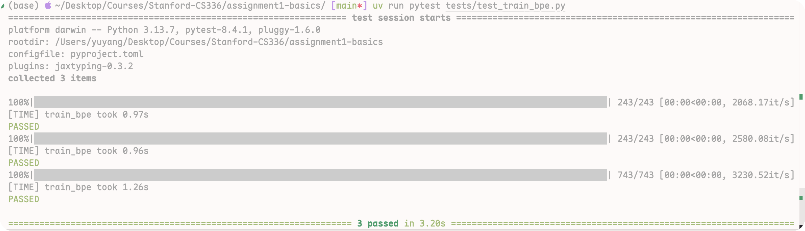
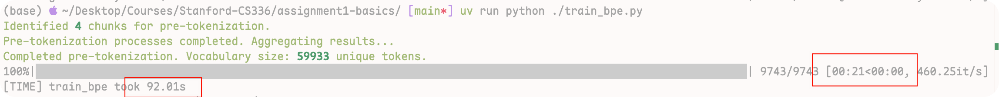
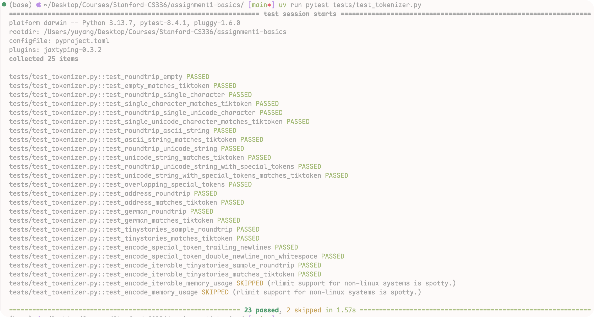
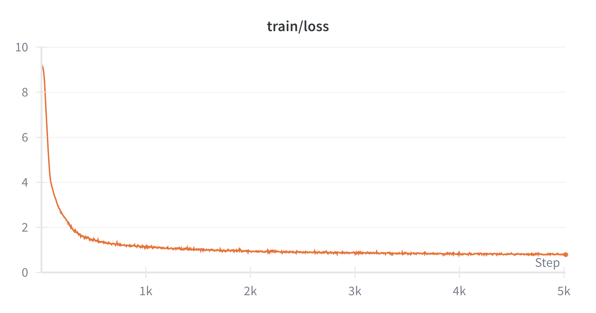
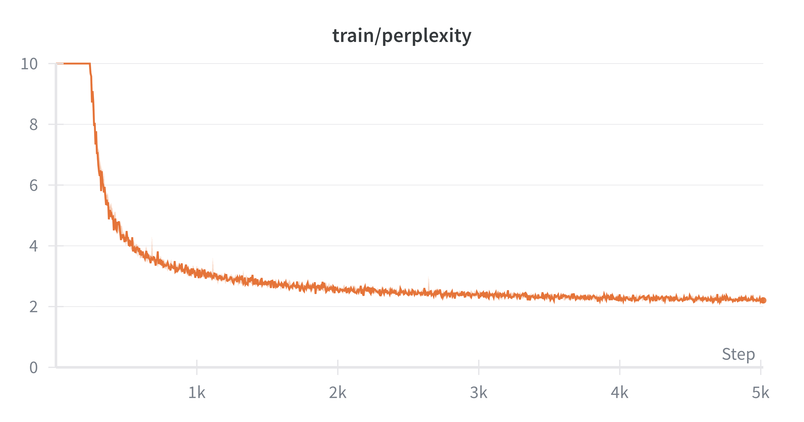
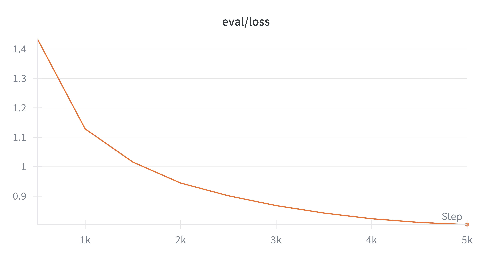
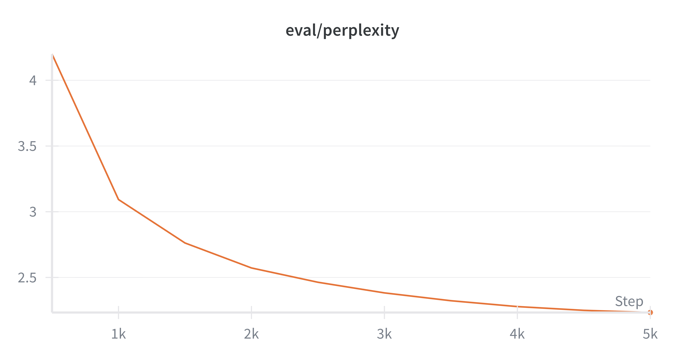

Assignment 01: Tokenization & Language Modeling
Assignment 01 要求我们从0实现一个简单的语言模型训练流程，涵盖：
- Tokenization 算法的实现
- 模型的定义
- 优化器的定义
- 训练代码
通过这一个Assignment，我们可以了解到创建一个完整的LM模型的全部流程，后续的课程以及Assignment都会基于这个流程进行扩展和优化。
在完成这个Assignment之前，我们首先需要学习Lecture 01,02,03 的内容，主要包括：
- Byte Pair Encoding (BPE)算法
- Transformer模型
- 语言模型的训练方法
- 优化器的使用
- PyTorch的基本使用
当然，我们还需要对Transformer有一定的了解，如果你不了解Transformer，我个人推荐阅读这篇 100-PaperwithCode系列的第一篇：01 Attention is all you Need.
对于不熟悉LM的同学们来说，这个Assignment可能有一定的难度，毕竟光任务的描述就50多页。不过，只要我们一步一步来，还是可以完成这个Assignment的。加油，别放弃😃😃！！
预计需要的时间
1 Preliminaries
1.1 Download Start Code and Dataset
首先我们需要下载Start Code：
下载完代码之后，我们再下载数据集：
mkdir -p data
cd data
wget https://huggingface.co/datasets/roneneldan/TinyStories/resolve/main/TinyStoriesV2-GPT4-train.txt
wget https://huggingface.co/datasets/roneneldan/TinyStories/resolve/main/TinyStoriesV2-GPT4-valid.txt
wget https://huggingface.co/datasets/stanford-cs336/owt-sample/resolve/main/owt_train.txt.gz
gunzip owt_train.txt.gz
wget https://huggingface.co/datasets/stanford-cs336/owt-sample/resolve/main/owt_valid.txt.gz
gunzip owt_valid.txt.gz
cd ..上面这个代码会下载两个数据集：
- TinyStories：一个非常小的故事数据集(1GB) ，适合快速测试和调试代码。
- OpenWebText (OWT) Sample：一个较大的文本数据集(4.7GB)，适合进行更深入的训练和评估。
除此之外，我们还需要安装 uv:
uv是什么？
uv是一个轻量级的Python项目管理和运行工具，可以帮助我们更方便地运行和测试代码。在这个Assignment中，我们将使用uv来运行测试和管理项目依赖。
安装完uv之后，我们就可以通过一下的代码来运行测试代码：
2 Part 01: Byte Pair Encoding (BPE) Implementation
在这一部分中，我们将实现Byte Pair Encoding (BPE) (Sennrich, Haddow, and Birch 2016)算法，用于文本的tokenization。在Lecture 01中，我们已经介绍了BPE的基本原理和实现方法。现在，我们将通过代码来进一步的实现并且优化BPE算法。
2.1 BPE Algorithm Recap
回顾一下BPE算法的基本步骤：
- Initialization: 将输入文本视为字节序列，每个字节作为一个token。初始化词汇表包含所有可能的字节（0-255）。以及Special Tokens，比如
<|endoftext|> - Count Pairs: 统计文本中所有相邻字节对的出现频率。
- Merge Pairs: 将频率最高的字节对其合并为一个新的token，更新文本和词汇表:
- Get the most frequent pair: 找到出现频率最高的字节对。
- Add the new pair: 将这个新的字节对加入词汇表。
- Update the word counter: 更新文本中所有出现该字节对的地方。
- Update Pairs Counts: 重新统计文本中所有相邻字节对的出现频率。
- Repeat: 重复步骤2,3，直到达到预定的合并次数
BPE 的伪代码如下所示：
首先，我们来实现一下最简单的BPE算法:
2.2 BPE Version 0
假如我们要Tokenized以下的文本：
string = """
low low low low low <|endoftext|>
lower lower widest widest widest <|endoftext|>
newest newest newest newest newest newest
"""def init_vocab(special_tokens: list[str] | None = None) -> dict[int, bytes]:
vocab: dict[int, bytes] = {x: bytes([x]) for x in range(256)} # idx -> byte representation
current_index = 256
if special_tokens:
for token in special_tokens:
token_bytes = token.encode("utf-8")
vocab[current_index] = token_bytes
current_index += 1
return vocab初始化时，我们会先为所有 byte 值 0–255 建立基础词表（文本先用 UTF-8 编码成字节序列来处理），并额外加入 special tokens；在编码过程中这些 special tokens 会被 优先匹配并作为整体保留，不参与普通的切分与 BPE 合并。
接下来我们来实现
def pair_counts(word_counter: dict[tuple[int, ...], int]) -> dict[tuple[int, int], int]:
pairs: dict[tuple[int, int], int] = {}
for word, count in word_counter.items():
for a, b in zip(word, word[1:]):
pairs[(a, b)] = pairs.get((a, b), 0) + count
return pairs我们先统计每个词（token 序列）出现的次数 count，再在遍历该词的相邻 token 对时，把每个 pair 的出现次数累加 count，从而得到全语料的 pair 频次。
接下来，我们需要实现
- 频率最高的pair
- 若多个 pair 频率相同，我们按 pair 的字典序（先比左 token，再比右 token）选择更大的那个。
def get_most_frequent_pair(
pair_counter: dict[tuple[int, int], int],
) -> tuple[int, int]:
max_freq = max(pair_counter.values())
candidates = [pair for pair, freq in pair_counter.items() if freq == max_freq]
res = max(candidates)
return res它(res)是本轮要 merge 的 pair（将它替换为一个新 token）
接下来，我们需要实现
def add_pair_to_vocab(
vocab: dict[int, bytes],
pair: tuple[int, int],
) -> int:
index1, index2 = pair
vocab[len(vocab)] = vocab[index1] + vocab[index2]
return len(vocab) - 1将这个新的pair加入词汇表后，我们需要实现
def merge_pair_ids(
word_counter: dict[tuple[bytes] | tuple[int], int],
pair: tuple[int, int],
new_id: int,
) -> tuple[dict[tuple[int], int], dict[tuple[int, int], int]]:
new_word_counter: defaultdict[tuple[int], int] = defaultdict(int)
updated_pair_counts: defaultdict[tuple[int, int], int] = defaultdict(int)
for token, freq in word_counter.items():
new_token = []
i = 0
L = len(token)
while i < L:
if i + 1 < L and (token[i], token[i + 1]) == pair:
new_token.append(new_id)
i += 2
else:
new_token.append(token[i])
i += 1
new_word_counter[tuple(new_token)] += freq
for index1, index2 in zip(new_token[:-1], new_token[1:]):
updated_pair_counts[(index1, index2)] += freq
return dict(new_word_counter), dict(updated_pair_counts)至此，我们已经完成了一轮，重复以上的步骤，直到我们达到目标的轮数，放在一起代码就是：
def train_bpe(
string: str = string,
vocab_size: int = 263,
special_tokens: list[str] = special_tokens,
save_path: str | None = None,
):
vocab = init_vocab(special_tokens)
num_merges = vocab_size - len(vocab)
merges: dict[tuple[int, int], int] = {}
word_counter = pre_tokenize(string, special_tokens, including_special=False)
pairs_freqs = pair_counts(word_counter)
for _ in range(num_merges):
most_common_pair = get_most_frequent_pair(pairs_freqs)
new_index = add_pair_to_vocab(vocab, most_common_pair)
merges[most_common_pair] = new_index
word_counter, pairs_freqs = merge_pair_ids(word_counter, most_common_pair, new_index)
return vocab, merges这也就是我们最简单的BPE的算法，我们称其为BPE Version0, 当我们运行这个代码，并且把vocab_size设置为263时，我们可以得到以下merges的顺序。
train_bpe(
string=string,
vocab_size=256 + 1 + 6, # 256 bytes + 1 special token + 6 merges
special_tokens=special_tokens,
)Most common pair: (b's', b't') -> 9
Most common pair: (b'e', b'st') -> 9
Most common pair: (b'o', b'w') -> 7
Most common pair: (b'l', b'ow') -> 7
Most common pair: (b'w', b'est') -> 6
Most common pair: (b'n', b'e') -> 6我们可以看到，尽管这个版本的BPE算法是正确的，但是它的效率非常低，因为每次我们都需要遍历所有的pair，来找到出现频率最高的pair，这样的时间复杂度是 \(\mathcal{O}(N \cdot P)\)，其中N是合并的次数，P是pair的数量。如果只是用这种简单的算法，我们是通不过测试的。因此我们需要优化这个算法，不过在优化之前，我们先来了解一下Pre-Processing的步骤。
2.3 Pre-Processing
在实现BPE算法之前，我们需要对文本进行预处理（Pre-Processing），主要包括两个步骤：
- 根据Special Tokens来分文本
- 根据正则表达来分文本
我们先来看一下根据Special Tokens来分文本的情况
2.3.1 Special Tokens Based Splitting
在这一节(Section 2.1) ，我们已经了解过了，在初始化vocab 时，我们也需要初始化special tokens，其中一个常见的special tokens就是 <|endoftext|>. 这个token意味着一段文本的结束。给出一段很长的文本，我们要做的第一件事情就是把这个文本分成许多段，代码的实现如下：
def split_by_special_tokens(text: str, special_tokens: list[str], include_special: bool = False) -> list[str]:
if not special_tokens:
return [text]
special_tokens_sorted = sorted(special_tokens, key=len, reverse=True)
pattern = "|".join(re.escape(t) for t in special_tokens_sorted)
if include_special:
special_chunks = re.split(f"({pattern})", text)
else:
# Split without capturing the special tokens
special_chunks = re.split(pattern, text)
return special_chunks至此，我们就完成了 Special Token-aware 的切分：
- 通过把所有 special tokens 先按长度降序排序，并用正则构造匹配 pattern，我们可以把原始长文本拆成一系列 普通文本片段（以及可选的 special token 片段）。
- 当
include_special=True时，re.split(f"({pattern})", text)会把匹配到的 special token 也保留下来，从而在后续编码时我们可以把它们当作“原子 token”直接映射到对应的 id； - 当
include_special=False时，special token 会作为分隔符被丢弃，仅返回普通文本片段，适合训练阶段不想让 special tokens 参与 pair 统计 / merges 的场景。
接下来，我们就可以对每个普通片段执行Regular-based的切分了，在这个过程中，我们会把文本切成更小的片段，比如词、子词片段、标点分隔片段等。
2.3.2 Regex-based Splitting (Pre-Tokenization)
Pre-Tokenization（预分词） 就是在真正训练 BPE 合并规则之前，先对整份语料做一次粗粒度的切分，把文本切成一段段“更大的片段”（pre-token），然后在这些片段内部去统计相邻字节（byte pair）的出现频率。、 那么，为什么需要Pre-Tokenization呢，主要有两个原因：
我们知道，merge一次，我们就要重新扫描一次，以获得更新后的新语料，如果这个语料特别大，或者我们merge的次数特别多，那么就会导致我们算法特别的慢。
这个时候我们就需要Pre-Tokenization，它的作用是：
- 先把语料切成很多“pre-token”（比如词、子词片段、标点分隔片段等）
- 统计时不再对整个语料逐字符/逐字节扫描，而是利用重复出现的 pre-token 的次数来加速。
举个例子：
- ‘text’ 这个 pre-token 出现了 10 次
- 当我们要统计 ‘t’ 和 ‘e’ 相邻出现次数
- 只要在 ‘text’ 里看到一次 “t”+“e” 相邻，就可以一次性把计数加 10 而不是把语料里每个 ‘text’ 都逐字节再看一遍。
比如有两个词 dog! 和 dog. 如果我们那不Pre-tokenization，那么这个很容易被当成不同的序列，从而对于这个类似的词，有两个完全不同的IDs。而 Pre-tokenization 通常会用一些规则（比如按空白、标点边界等）先切开，让 BPE 更多在“词内部”学习合并规律，而不是把词和各种标点粘在一起乱合并。
在这个 Assignment 里，我们采用 regex-based pre-tokenizer（GPT-2 使用的那条正则），先把原始文本切成一串“预分词片段”（pre-tokens），再对每个片段做 byte-level BPE。
Regex 详解
我们来详细解释一下这个正则表达式： 它的分块规则（从左到右匹配）：
- 英语缩写/词尾：’s, ’t, ’re, ’ve, ’ll, ’m, ’d 等（第一段）
- 字母串： ?+ —— 一段字母（允许前面带一个可选空格，把空格“粘”到后面的 token 上）
- 数字串： ?+ —— 一段数字（同样允许前置空格）
- 标点/其它符号串： ?[^\s\p{L}\p{N}]+ —— 非空白、非字母、非数字的一串符号（也允许前置空格）
- 空白：+(?!)（末尾空白）或 +（一般空白）
- +：匹配一段空白（空格、换行、tab 等）。
- (?!)：负向前瞻，确保这段空白后面没有非空白字符（即这是行尾或文本末尾的空白）。
这种设计的关键点是：很多 token 会把前导空格包含进去（例如 ” hello” 会被当成一个整体的 pre-token），这能更好地匹配英语里“词边界=空格”的统计特性，也更接近 GPT-2 的实际 tokenizer 行为。如果不理解，也没有关系，直接用这个正则就行。
有了这个正则表达式，我们就可以实现 Pre-Tokenization 了，代码如下：
def pre_tokenize(string: str, special_tokens: list[str], including_special: bool = False) -> Counter:
word_counter = Counter()
chunks = split_by_special_tokens(string, special_tokens, include_special=including_special)
for chunk in chunks:
if including_special and chunk in special_tokens:
word_counter[tuple(string_to_bytes(chunk))] += 1
else:
for match in re.finditer(PAT, chunk):
word = match.group(0)
word_encoded = tuple(string_to_bytes(word, return_int=True))
word_counter[word_encoded] += 1
return word_counter通过 pre-tokenization，我们把原始文本转换成许多“预分词片段”的 byte/id 序列，并用 Counter 统计每种片段出现的次数。后续在统计 pair 频率时，每个片段的相邻 token 对出现次数都会按其 count 加权累加，从而得到全语料的 pair 频次。
2.3.3 Multi-Processing
以上这两步（Special Token-aware Splitting 和 Regex-based Pre-Tokenization），我们可以通过一个 Multi-Processing
Multi-Processing Review
Python 的MultiProcessing 是一个- 多进程 更适合 CPU 密集型任务（比如预分词、统计）。，我们只需要了解以下的内容：
from multiprocessing import Process, Queue
import queue
from collections import Counter
def task(*args): # 定义实际要并行执行的任务函数
# ... do something ... # 这里写你的真实任务逻辑
return Counter() # 返回一个 Counter（示例），便于主进程聚合
def task_worker(out_queue: Queue, *args): # worker：接收输出队列和任务参数
output = task(*args) # 执行任务，得到部分结果
out_queue.put(output) # 把结果放进队列，交给主进程汇总
num_process = 4 # 进程数示例（你需要自己设置）
task_args_list = [("a",), ("b",), ("c",), ("d",)] # 每个进程的参数示例（你需要替换成真实参数）
out_queue: Queue = manager.Queue() # 创建进程间通信队列
processes: list[Process] = [] # 保存所有进程对象，方便后面 join
for args in task_args_list: # 遍历每个任务的参数
p = Process(target=task_worker, args=(out_queue, *args)) # 创建进程，并把队列+参数传给 worker
processes.append(p) # 记录进程对象
p.start() # 启动进程开始执行
all_out = Counter() # 主进程的总 Counter，用于累加所有部分结果
for _ in range(len(processes)): # 预期每个进程都会 put 一次结果，所以收 len(processes) 次
try:
partial_out = out_queue.get(timeout=10) # 从队列取一个结果，最多等待 10 秒
all_out.update(partial_out) # 把这个进程的 Counter 合并到总 Counter
except queue.Empty: # 如果超时没取到，就跳过
continue # 继续尝试下一个
for p in processes: # 遍历所有进程
p.join() # 等待进程结束有了这些前置知识之后，实现这个Pre-Processing的步骤就很容易了，以下是Pre-process的代码
cs336_basics/tokenizer/tokenizer.py
def pre_tokenize_string_worker(*args):
input_path, special_tokens, queue, start, end, include_special = args
# Read the chunk from the file
with open(input_path, "rb") as f:
f.seek(start)
chunk = f.read(end - start).decode("utf-8", errors="ignore")
word_counter = pre_tokenize(chunk, special_tokens, include_special)
# Put the result in the queue
queue.put(word_counter)
def train_bpe():
with open(input_path, "rb") as f:
chunk_boundaries = find_chunk_boundaries(
f, desired_num_chunks=kwargs.get("desired_num_chunks", NUM_PROCESSES), split_special_token=b"\n"
)
manager = Manager()
queue = manager.Queue()
processes: list[Process] = []
for start, end in zip(chunk_boundaries[:-1], chunk_boundaries[1:]):
p = Process(
target=pre_tokenize_string_worker,
args=(input_path, special_tokens, queue, start, end, False),
)
processes.append(p)
p.start()
word_counter = Counter()
for _ in range(len(processes)):
try:
partial_counter = queue.get(timeout=10)
word_counter.update(partial_counter)
except Empty:
continue
for p in processes:
p.join()通过这个合集，我们的得到了 word_counter 这个变量. 它记录了每个 pre-token（byte/id 序列）在整个语料中出现的次数，接下来我们就可以基于这个 word_counter 来统计 pair 频次，并进行 BPE 合并了.
Multi-Processing 注意事项
需要注意的一点是，进程数（NUM_PROCESSOR）并不是越多越好。在实际实现中，当进程数继续增大时，整体速度反而可能变慢，主要原因有三点：
- 创建与调度开销：启动多个进程本身就有成本（fork/spawn、初始化、调度），任务越细碎，这部分开销占比越高。
- 跨进程通信成本：多进程之间需要传递数据（例如把 chunk 分发给 worker、再把统计结果汇总回来），会引入序列化/反序列化（pickle）以及 IPC 的额外耗时。
- 内存与缓存压力：进程越多，往往会带来更高的内存占用与 cache/memory bandwidth 竞争，反而拖慢吞吐。
因此，多进程的最佳数量通常取决于：任务粒度、数据规模、CPU 核数、以及 IPC 的比例。在本次 Assignment 的语料规模与实现方式下，一个经验上更稳的选择是 NUM_PROCESSOR=4：既能获得明显的并行加速，又能避免过多进程带来的额外开销与拥塞。
2.3.4 Others
除了 word_counter（记录每个 word/token 序列出现次数）之外，我们还会额外构建两个辅助结构，来支持后续 更高效的 pair 统计与更新：
cs336_basics/tokenizer/tokenizer.py
pairs_counter[pair]：记录该相邻 pair 在全语料中的总出现次数。 因为每个 word 在语料中出现了word_counter[word]次，所以 word 内部每出现一次 pair，就为全局频次贡献word_counter[word]。pair_to_words[pair]：记录该 pair 出现在哪些 word（token 序列）里, 这个映射非常关键：当我们选择某个 pair 进行 merge 时，只有包含该 pair 的 word 会发生变化。借助pair_to_words，我们可以只遍历这些“受影响的 words”，并对pairs_counter做局部增量更新，而不是每轮都重新扫描全部word_counter。
2.4 BPE Version 1: Using Heap
一个很明显的优化点是：每一轮都要找当前频率最高的 pair。在 Version 0 (Section 2.2) 里，我们每轮都通过遍历 pairs_counter 来取最大值，这一步是 \(\mathcal{O}(n)\)（\(n\) 是 pair 的数量）。而这个操作正好符合堆（heap）的使用场景：用堆维护“当前最大的元素”，就能把“取最大”降到 \(\mathcal{O}(\log n)\)（严格来说是：取堆顶是 \(\mathcal{O}(1)\)，但如果包含 pop/push 更新则是 \(\mathcal{O}(\log n)\)）。
具体做法是把每个 pair 作为堆元素，并把“排序依据”设计成：
- 频次越大优先级越高
- 频次相同则按 pair 的字典序更大者优先
在 Python 的 heapq 是最小堆，因此我们可以用负号把它变成“最大堆”，例如存成：
- key = (-freq, -a, -b)
这样每一轮我们都能快速拿到候选的“最常见 pair”。
不过要注意一点：频次在 merge 之后会发生变化，因此堆里旧的条目可能变“过期”。在 pop 堆顶时，我们需要检查该 pair 的当前频次是否和堆里存的频次一致；如果不一致，说明堆顶是过期的，就继续 pop 直到找到一个有效的 pair。
cs336_basics/tokenizer/merge_fn.py
class HeapItem:
def __init__(self, neg_freq: int, pair_bytes: tuple[bytes, bytes], pair: tuple[int, int]):
self.neg_freq = neg_freq
self.pair_bytes = pair_bytes
self.pair = pair
def __lt__(self, other: "HeapItem") -> bool:
if self.neg_freq != other.neg_freq:
return self.neg_freq < other.neg_freq
return self.pair_bytes > other.pair_bytes # reverse order for max-heap behavior
def build_pair_heap(pairs_freqs: Counter, vocab: dict[int, bytes]):
heap = []
for (a, b), f in pairs_freqs.items():
if f > 0:
item = HeapItem(-f, (vocab[a], vocab[b]), (a, b))
heapq.heappush(heap, item)
return heap
def pop_most_frequent_pair(heap, pairs_counter: Counter) -> tuple[int, int]:
while heap:
item = heap[0] # Peek at the top item
neg_f = item.neg_freq
pair = item.pair
cur_f = pairs_counter.get(pair, 0)
if cur_f <= 0 or -neg_f != cur_f: # frequency changed, which means the pair we store in heap is stale
heapq.heappop(heap)
continue
return pair
raise ValueError("No positive-frequency pairs remain")2.5 BPE Version 2: Using Heap + Indexing
除了用 Heap 加速“选出频率最高的 pair”，另一个更关键的瓶颈在于 merge 更新阶段：在 Version 0{Section 2.2} 里，我们每一轮都会遍历 word_counter 里的所有 word，检查这个 word 里是否出现了目标 pair；这一步的代价通常非常高，因为绝大多数 word 根本不包含 当前要 merge 的 pair，但我们还是把它们都扫了一遍。
因此我们可以用一个“倒排索引”来做 空间换时间：提前维护一个映射 pair -> {words…}，记录每个 pair 出现在哪些 word 中。这样当我们决定 merge 某个 pair 时，就只需要遍历 pair_to_words[pair] 里的那一小部分 word，而不必全量扫描所有 word。
这也正是我们搭建 pair_to_words 的原因：
- 没有索引：每轮 merge 都是 全量扫描所有 words（慢，\(\mathcal{O}(\#words)\) 级别）。
- 有索引：每轮只处理 包含该 pair 的 words 子集（快，复杂度取决于该 pair 的覆盖范围，通常远小于全量）。
接下来，我们还需要在 merge 之后，更新这个索引：当某个 pair 被 merge 成一个新 token 后，所有包含该 pair 的 word 都会发生变化，因此我们需要把这些 word 从旧 pair 的索引里移除，并把它们添加到新 pair 的索引里。具体实现如下：
cs336_basics/tokenizer/merge_fn.py
def merge_pairs_with_heap_index(
word_counter: dict[tuple[int, ...], int],
pair_counter: Counter,
target_pair: tuple[int, int],
new_id: int,
vocab: dict[int, bytes],
pair_heap,
pair_to_words: dict[tuple[int, int], set[tuple[int, ...]]],
) -> tuple[
dict[tuple[int, ...], int],
Counter,
list,
dict[tuple[int, int], set[tuple[int, ...]]],
]:
# Start from full counters so unaffected words remain.
new_word_counter: Counter = Counter(word_counter)
updated_pair_counter: Counter = pair_counter.copy()
changed_pairs: set[tuple[int, int]] = set()
# Get all words that contain the target pair.
affected_words = list(pair_to_words.get(target_pair, set()))
for w in affected_words:
freq = word_counter.get(w, 0)
if freq <= 0 or len(w) < 2:
continue
# 1. Remove the old word from the corpus counts.
new_word_counter[w] -= freq
if new_word_counter[w] <= 0:
del new_word_counter[w]
# 2. Subtract ALL old adjacent pairs for this word + remove old word from index.
for i in range(len(w) - 1):
pair = (w[i], w[i + 1])
updated_pair_counter[pair] -= freq
changed_pairs.add(pair)
s = pair_to_words.get(pair)
if s is not None:
s.discard(w)
if not s:
del pair_to_words[pair]
# 3. Build merged word (greedy left-to-right, same as standard BPE).
new_word = get_new_word(w, target_pair, new_id)
new_word_counter[new_word] += freq
# 4. Add ALL new adjacent pairs for merged word + add merged word into index.
if len(new_word) >= 2:
for i in range(len(new_word) - 1):
pair = (new_word[i], new_word[i + 1])
updated_pair_counter[pair] += freq
changed_pairs.add(pair)
pair_to_words.setdefault(pair, set()).add(new_word)
# 5. Push updated frequencies for changed pairs into heap (skip non-positive).
if pair_heap is not None:
for p in changed_pairs:
f = updated_pair_counter.get(p, 0)
if f > 0:
heapq.heappush(pair_heap, HeapItem(-f, (vocab[p[0]], vocab[p[1]]), p))
return dict(new_word_counter), updated_pair_counter, pair_heap, pair_to_words有了这两个优化的点，BPE的训练速度可以大大的提升，
| 版本 | 找最频繁 pair | 更新计数 | 训练主循环瓶颈 |
|---|---|---|---|
| v0 | 每轮扫一遍 pairs (\(\mathcal{O}(\#pairs)\)) | 每轮重算 | 很慢 |
| heap | pop \(\mathcal{O}(\log \#pairs)\) | 仍可能扫很多 | 更快 |
| heap + pair_to_words | pop \(\mathcal{O}(\log \#pairs)\) | 只更新受影响的 words/pairs | 明显更快 |
2.6 Train BPE
将上面的实现，替换成我们最新的实现后，我们就可以实现BPE的算法：
cs336_basics/tokenizer/tokenizer.py
def train_bpe(
input_path: str | os.PathLike,
vocab_size: int,
special_tokens: list[str] | None = None,
verbose: bool = False,
**kwargs,
) -> tuple[dict[int, bytes], list[tuple[bytes, bytes]]]:
num_merges = vocab_size - 256 - (len(special_tokens) if special_tokens else 0)
vocab: dict[int, bytes] = init_vocab(special_tokens)
merges: list[tuple[bytes, bytes]] = []
# 1. Pre-tokenization
# 1.1 Find chunk boundaries
with open(input_path, "rb") as f:
chunk_boundaries = find_chunk_boundaries(
f, desired_num_chunks=kwargs.get("desired_num_chunks", NUM_PROCESSES), split_special_token=b"\n"
)
if verbose:
print_color(f"Identified {len(chunk_boundaries) - 1} chunks for pre-tokenization.")
# 1.2 Count word frequencies across chunks using multiprocessing
manager = Manager()
queue = manager.Queue()
processes: list[Process] = []
for start, end in zip(chunk_boundaries[:-1], chunk_boundaries[1:]):
p = Process(
target=pre_tokenize_string_worker,
args=(input_path, special_tokens, queue, start, end, False),
)
processes.append(p)
p.start()
if verbose:
print_color("Pre-tokenization processes completed. Aggregating results...")
word_counter = Counter()
for _ in range(len(processes)):
try:
partial_counter = queue.get(timeout=10)
word_counter.update(partial_counter)
except Empty:
continue
for p in processes:
p.join()
if verbose:
print_color(f"Completed pre-tokenization. Vocabulary size: {len(word_counter)} unique tokens.")
pairs_counter = Counter()
pair_to_words: dict[tuple[int, int], set[tuple[int, ...]]] = defaultdict(set)
for word in word_counter:
for i in range(len(word) - 1):
pair = (word[i], word[i + 1])
pair_to_words[pair].add(word)
pairs_counter[pair] += word_counter[word]
# 2. BPE Core Loop
pair_heap = build_pair_heap(pairs_counter, vocab)
for i in trange(num_merges):
most_frequent_pair = pop_most_frequent_pair(pair_heap, pairs_counter)
new_id = update_vocab(vocab, most_frequent_pair)
word_counter, pairs_counter, pair_heap, pair_to_words = merge_pairs_with_heap_index(
word_counter, pairs_counter, most_frequent_pair, new_id, vocab, pair_heap, pair_to_words
)
merges.append((vocab[most_frequent_pair[0]], vocab[most_frequent_pair[1]]))
if kwargs.get("save_path"):
save_vocab_and_merges(vocab, merges, kwargs["save_path"])
with open(os.path.join(kwargs["save_path"], "special_tokens.txt"), "w", encoding="utf-8") as f:
if special_tokens:
for token in special_tokens:
f.write(f"{token}\n")
return vocab, merges运行一下测试代码
tests/adapters.py
我们看到，所有的测试都通过了！ 
2.7 BPE on TinyStory
在TinyStory上训练BPE，
只需要不到2mins。

2.8 BPE Tokenizer
有了vocab merges 我们可以实现一个BPE Tokenizer
cs336_basics/tokenizer/tokenizer.py
class BPETokenizer:
def __init__(
self,
vocab: dict[int, bytes],
merges: list[tuple[bytes, bytes]],
special_tokens: list[str] | None = None,
):
self.vocab = vocab
self.merges = merges
self.special_tokens = special_tokens if special_tokens else []
self.special_tokens_bytes = [t.encode("utf-8") for t in self.special_tokens]
self.special_set = set(self.special_tokens_bytes)
self.vocab_inv = {v: k for k, v in self.vocab.items()}
rank: dict[tuple[int, int], int] = {}
merge_to_new_id: dict[tuple[int, int], int] = {}
for r, (a_bytes, b_bytes) in enumerate(self.merges):
a_id = self.vocab_inv.get(a_bytes)
b_id = self.vocab_inv.get(b_bytes)
# The merged token should be present in vocab; if not, skip this merge rule.
new_id = self.vocab_inv.get(a_bytes + b_bytes)
if a_id is None or b_id is None or new_id is None:
continue
pair = (a_id, b_id)
rank[pair] = r
merge_to_new_id[pair] = new_id
self.rank = rank
self.merge_to_new_id = merge_to_new_id
self.eos_token_id = self.vocab_inv.get(b"<|endoftext|>", None)
def encode(self):
pass
def encode_iterable(self):
pass
def decode(self):
tokens = b"".join(self.vocab.get(i, b"\xef\xbf\xbd") for i in ids)
return tokens.decode("utf-8", errors="replace")
@classmethod
def from_files(
cls, vocab_filepath: str, merges_filepath: str, special_tokens: list[str] | str | None = None
) -> "BPETokenizer":
with open(vocab_filepath) as vf:
vocab_data = json.load(vf)
vocab = {int(i): bytes(v, "latin1") for v, i in vocab_data.items()}
merges = []
with open(merges_filepath) as mf:
# Skip the first line (header)
next(mf)
for line in mf:
if line.strip() and not line.startswith("#"):
parts = line.strip().split()
if len(parts) == 2:
merges.append((bytes(parts[0], "latin1"), bytes(parts[1], "latin1")))
if isinstance(special_tokens, str):
with open(special_tokens, encoding="utf-8") as stf:
special_tokens_list = [line.strip() for line in stf if line.strip()]
elif isinstance(special_tokens, list):
special_tokens_list = special_tokens
else:
special_tokens_list = []
return cls(vocab, merges, special_tokens_list)BPE Tokenizer 主要实现三个功能：
encode：把字符串编码成 token IDs 列表encode_iterable：把字符串编码成 token IDs 生成器decode：把 token IDs 列表解码成字符串
在这里，我们主要介绍 encode 的实现；相比之下，decode 的逻辑更直接：把 token ids 依次映射回对应的 bytes，拼接成完整的字节序列，再用 UTF-8 解码得到字符串。需要特别注意的是 b"\xef\xbf\xbd" 的处理——它是 Unicode U+FFFD（replacement character，“�”）在 UTF-8 下的字节表示。我们在 decode 时会对每个 i（token id）执行一次查表 self.vocab.get(i, ...)：
- 如果 i 能在词表中找到，就取出对应的 bytes；
- 如果找不到（例如遇到非法/越界的 id，或词表不完整），就用 b”” 作为兜底。 这样做的好处是：即使输入 ids 中混入了未知 token，decode 也不会崩溃，而是用“�”显式标记无法还原的部分，保证整个解码过程始终可运行、输出始终是一个合法字符串。
2.8.1 Encode in BPETokenizer
def encode(self, text: str) -> list[int]:
def merge_one_pretoken(ids: list[int]) -> list[int]:
pass
# step 1
byte_tokens = self._pre_tokenize(text)
# step 2
token_ids: list[int] = []
for btok in byte_tokens:
if btok in self.special_set:
token_ids.append(self.vocab_inv[btok])
else:
ids = [self.vocab_inv[bytes([b])] for b in btok]
token_ids.extend(merge_one_pretoken(ids))
return token_ids这个encode主要做两个事情：
- Pre-tokenization：先粗粒度切分文本
- 对每个 pre-token 做 BPE merge
第一步和我们之前实现的一样，对于第二步，主要的实现方法在 merge_one_pretoken 中实现。 在这个函数中，我们通过Heap和Double Linked List 来高效实现这个Encode。
首先，我们用数组来模拟双向链表：
合并时并不真的 del 掉元素，而是：
- 标记被吞掉的节点
alive[j] = False - 调整指针
nxt[i] = nxt[j]、prev[nxt[j]] = i
这样每次合并都是 \(\mathcal{O}(1)\) 的时间复杂度。
接下来，我们用一个min heap，来获取我们最先要实现merge的pair，也就是在训练阶段，出现频率最高的pair。
堆里存 (rank, i)，表示当前位置 i 与其右邻居 nxt[i] 的 pair 在 merge 规则中的优先级（rank 越小越先合并）。 每次取出最小 rank 的候选，做一次合并，然后只需要重新检查局部的两个 pair：
- (prev[i], i)
- (i, nxt[i])
heap: list[tuple[int, int]] = []
def push_if_valid(i: int):
cur_r = None
j = nxt[i]
if j == -1 or not alive[i] or not alive[j]:
cur_r = None
else:
cur_r = self.rank.get((ids[i], ids[j]))
if cur_r is not None:
heapq.heappush(heap, (cur_r, i))
for i in range(n):
push_if_valid(i)与之前的heap一样，heap里面的内容会 “过期”： 因为合并会改变邻接关系，堆中旧条目会过期，所以每次 pop 出来都要验证,
接下来就是遍历这个heap，如果这个heap不是空的，我们就弹出，并且验证：
这段 while heap: 是整个 merge_one_pretoken 的核心：堆里维护“当前可合并的相邻 pair”，每次取出 rank 最小（最优先） 的候选进行合并，并只更新合并点附近的候选。
while heap: # 只要还有候选 pair，就继续尝试合并
r, i = heapq.heappop(heap) # 取出当前 rank 最小的候选：(rank, 左端点位置 i)
j = nxt[i] # 右端点位置 j 是 i 在链表中的后继
if j == -1 or not alive[i] or not alive[j]: # i/j 无效或 i 已到尾部：这是过期候选
continue # 跳过，继续处理下一个堆元素
# stale check：堆里的记录可能已过期（邻居关系/ids 已改变），需要重新验证
pair = (ids[i], ids[j]) # 当前时刻 i 和 j 对应的 token id 组成的相邻 pair
cur_r = self.rank.get(pair) # 查询这个 pair 在 merge 规则中的 rank（不可合并则为 None）
if cur_r is None or cur_r != r: # 现在不可合并，或 rank 已不匹配：说明堆元素过期
continue # 跳过该候选
# 执行合并：把 (ids[i], ids[j]) 合成一个新 token，并写回到位置 i
new_id = self.merge_to_new_id.get(pair) # 查找该 pair 合并后的 token id
if new_id is None: # 理论上不该发生（rank 有但映射没建好），当作过期/异常处理
continue # 跳过
ids[i] = new_id # 用新 token id 覆盖左端点 i（i 成为合并后的节点）
# 从链表中删除 j：j 被 i 吞掉了
alive[j] = False # 标记 j 节点被删除
nj = nxt[j] # 记住 j 的后继节点
nxt[i] = nj # 让 i 直接指向 nj（跳过 j）
if nj != -1: # 如果 nj 存在
prev[nj] = i # 更新 nj 的前驱为 i，保持链表一致
# 局部更新：合并只会影响 i 附近的两个相邻 pair
pi = prev[i] # i 的前驱位置
if pi != -1: # 如果前驱存在
push_if_valid(pi) # (pi, i) 这个 pair 可能变得可合并或 rank 改变
push_if_valid(i) # (i, nxt[i]) 这个 pair 也可能变得可合并或 rank 改变最后我们只需要把链表结构还原成最终的token序列即可：
在 BPE 合并阶段，我们用 prev / nxt / alive 维护了一个“数组模拟的双向链表”。合并时并不会真的删除 ids 里的元素，而是把被吞掉的位置标记为 alive=False，并通过 nxt 跳过它们。
因此在所有合并完成后，需要把“还活着的节点”按顺序重新收集成一个紧凑的输出序列：
out: list[int] = [] # 最终合并后的 token id 序列
k = 0 # 从链表头（位置 0）开始遍历
while k != -1: # -1 表示到达链表末尾
if alive[k]: # 如果该位置还没有被合并删除
out.append(ids[k]) # 把当前位置的 token id 加入输出
k = nxt[k] # 跳到下一个“仍在链表中的”位置至此，我们以及完成了BPE阶段的所有的内容，接下来就是要训练，并存储我们预先Token好的内容

2.9 Tokenize and Save File
有了 tokenizer.encode() 之后，我们通常会希望把一整个文本文件编码成 紧凑的二进制（.bin），方便后续训练时用 np.memmap 之类的方式高效加载，而不是每次都重新分词。
下面这段函数做的事情很简单：按行读取文本 → 把每行编码成 token ids → 用固定 dtype 写入二进制文件。
def encode_file_to_bin(tokenizer, text_path, out_bin_path, dtype=np.uint16):
total_bytes = os.path.getsize(text_path)
with open(text_path, encoding="utf-8") as f_in, open(out_bin_path, "wb") as f_out:
p_bar = tqdm(total=total_bytes, desc="Encoding to binary", unit="B", unit_scale=True)
for line in f_in:
token_ids = tokenizer.encode(line) # 1) 把一行文本编码成 token ids
arr = np.array(token_ids, dtype=dtype) # 2) 转成 numpy 数组（更适合写二进制）
arr.tofile(f_out) # 3) 直接以二进制写入 .bin 文件
p_bar.update(len(line.encode("utf-8"))) 根据我们的实现，只需要不到30mins就可以训练完BPE。
在这里 .bin 里不保存行边界/样本边界 训练时把它当作一个长序列做 next-token prediction（GPT 风格），用 block sampling；
Question 1: 为什么用uint16就可以了呢？
应为在BPE的训练阶段，我们将vocab size设置为 10,000 或者 32,000 远远小于 uint16的最大值 65,535因此用uint16是安全的。
我们通过运行以下代码来完成TinyStory的Tokenization与保存：
在训练完之后，我们可以到的一下的directory
2.10 Part 01 Summary
总的来说，Part 01 相比大家更期待的「LLM 训练与模型结构」部分，更偏向工程实现与性能优化：通过合适的数据结构与算法设计（例如 heap、索引表、双向链表、并行统计等），我们可以在不改变算法(Algorithm 1) 的前提下，把 BPE 的训练与推理速度提升一个数量级。
很多读者（包括我自己）会觉得这一部分“又长又绕”，主要原因往往不是内容本身有多难，而是对这些工程细节还不够熟悉：一旦把数据结构的作用、更新范围、以及 stale check 的逻辑串起来，整体会清晰很多。所以如果你第一次读完仍然觉得有点乱，这是非常正常的—— 请不要气馁 , 精彩的部分还正要开始！
Tokenization 是训练 LLM 的第一步。真正理解这部分，会直接帮助你在后续更顺畅地掌握：
- 如何进行数据加载与采样（例如
.bin+memmap） - 如何高效地
encode / decode - 以及在更进阶的话题里，如何围绕 tokenizer 与序列表示去扩展模型的 context length
下一部分我们将把 tokenizer 生成的二进制数据接入训练 pipeline，进入真正的 model training 环节。
3 Part 02: Language Model Implementation
在本部分中，我们将实现一个简单的语言模型，使用我们在第一部分中实现的BPE进行tokenization。我们将使用PyTorch来定义和训练模型。
对于Transformer-Decoder模型不熟悉的同学，我非常推荐 Andrej Karpathy 的下面这个视频：
下图是Transformer Language Model的整体架构概览：
可以看到，模型主要由以下几个模块组成：
- Embedding Layer: 将输入的token IDs转化为dense vectors。
- Transformer Blocks: 包含多层自注意力机制和前馈神经网络
- Normalization Layer: 使用RMS-Norm对输入进行归一化处理。
- Multi-Head Self-Attention: 实现自注意力机制，允许模型关注输入序列的不同部分。
- Feed-Forward Network: 由两个线性层和一个激活函数组成
- Output Layer: 将Transformer的输出映射回词汇表大小的logits，用于预测下一个token。
接下来我们将一步步实现这个模型的各个模块。首先，实现的是Linear Module.
3.1 Linear Module
Linear Module 基本是所有神经网络的起始点，它的定义如下:
\[ y = Wx \tag{1}\]
其中 \(W \in \mathbb{R}^{d_{\text{out}} \times d_{\text{in}}}\) , \(x \in \mathbb{R}^{d_{\text{in}} \times 1}\) , \(y \in \mathbb{R}^{d_{\text{out}} \times 1}\)
NOTE
在这里，我们实现的 Linear Module 与任务中要求的略有不同， 主要体现在以下两点：
- 我们将 weight 的 shape 设为 (in_features, out_features)， 这样在 forward 的时候，可以直接使用
@运算符进行矩阵乘法，代码更简洁。 - 我们将 bias 设为可选项，默认不使用 bias，这样可以更好地模拟 Transformer 中的 Linear Layer。
class Linear(nn.Module):
def __init__(
self,
in_features,
out_features,
device: torch.device | None = None,
dtype: torch.dtype | None = None,
bias: bool = False,
):
super().__init__()
self.in_features = in_features
self.out_features = out_features
self.weight = nn.Parameter(torch.empty((in_features, out_features), device=device, dtype=dtype))
self.bias = nn.Parameter(torch.empty(out_features, device=device, dtype=dtype)) if bias else None
self._init_weight()
def forward(self, x):
o = x @ self.weight
if self.bias is not None:
o = o + self.bias
return o
def _init_weight(self):
mean = 0.0
std = 1.0 / (2 * (self.in_features + self.out_features) ** 0.5)
torch.nn.init.trunc_normal_(self.weight, mean=mean, std=std, a=-3 * std, b=3 * std)其中 _init_weight() 是初始化的方法， 在Assignment 1 中为：
\[ \mathcal{N}\left( \mu = 0, \sigma^{2}=\frac{2}{d_{\text{in}} + d_{\text{out}}} \right) \quad \text{truncated at} [-3\sigma, 3\sigma ] \]
这种初始化的方式是最常见的，也是比较robust的，当然，大家还可以尝试不同的初始化的方式, 例如Xavier-initialization， Kaiming-initialization等。
3.2 Embedding Model
记得我们在前面第一章节，实现了BPE的Tokenization，回顾一下，
TL;DR: BPE Tokenization
Tokenization的步骤就是把文字，转化成一个个的IDs。 但是这个IDs是不能被模型处理的，我们需要将其转化成一个个的Dense Vector，这个就是所谓的 Embedding。
Embedding 的数学定义如下： \[ \text{Embedding}(x) = W_{e}[x] \tag{2}\]
其中 \(W_{e} \in \mathbb{R}^{V \times d_{\text{model}}}\) 是 Embedding 矩阵，\(V\) 是词汇表的大小，\(d_{\text{model}}\) 是模型的隐藏维度，\(x \in \mathbb{N}^{B \times L}\) 是输入的token IDs， \(B\) 是batch size，\(L\)是序列长度。
代码实现如下：
class Embedding(nn.Module):
def __init__(
self,
num_embeddings: int,
embedding_dim: int,
device: torch.device | None = None,
dtype: torch.dtype | None = None,
):
super().__init__()
self.num_embeddings = num_embeddings
self.embedding_dim = embedding_dim
self.weight = nn.Parameter(torch.empty((num_embeddings, embedding_dim), device=device, dtype=dtype))
self._init_weight()
def forward(self, x: torch.Tensor) -> torch.Tensor:
B, L = x.shape # x: (B, L)
out = x.reshape(-1) # (B*L,)
out = self.weight.index_select(0, out) # (B*L, D)
out = out.reshape(B, L, self.embedding_dim) # (B, L, D)
return out很简单的也很直观，它的权重初始化的方式为：
\[ \mathcal{N}\left( \mu = 0, \sigma^{2}=1 \right) \quad \text{truncated at} [-3, 3] \]
NOTE
其实在forward中，我们只需要使用 self.weight[x] 这一行代码，就可以实现 Embedding 的功能， 但是为了更清晰地展示 Embedding 的工作原理，我们使用了 index_select() 来实现。
3.3 RMS-Norm
在现代的Language Model中，常见的Normalization的方法是 RMS-Norm(Zhang and Sennrich 2019)， 其数学定义如下：
\[ \begin{split} \text{RMSNorm}(a_{i}) &= \frac{a_{i}}{\text{RMS}(a)} g_{i} \\ \text{where} \quad \text{RMS}(a) &= \sqrt{ \frac{1}{d_{\text{model}}} \sum_{i=1}^{d_{\text{model}}}a_{i}^{2} + \epsilon} \end{split} \]
其中 \(g\) 是可学习的缩放参数，它的维度与输入 \(a\) 相同，\(\epsilon\) 是一个很小的数值，防止除以0。
实现RMS-Norm的方式也很简单，不过有一个需要注意的点就是：如果我们用了Mixed Precision Training，当用 sqrt() 时， 可能会导致Underflow，为了避免这一点，在训练的时候，我们需要先将 activation upcast到 float32， 结束的时候再返回原来的数据类型。具体的请看代码：
cs336_basics/modules/norm.py
class RMSNorm(nn.Module):
def __init__(
self,
d_model: int,
eps: float = 1e-5,
device: torch.device | None = None,
dtype: torch.dtype | None = None,
):
super().__init__()
self.d_model = d_model
self.eps = eps
self.weight = nn.Parameter(torch.ones(d_model, device=device, dtype=dtype))
def _rms(self, x: torch.Tensor) -> torch.Tensor:
return torch.sqrt(torch.mean(x**2, dim=-1, keepdim=True) + self.eps)
def forward(self, x: torch.Tensor) -> torch.Tensor:
input_dtype = x.dtype
x = x.to(torch.float32)
rms = self._rms(x)
x_normed = x / rms
return (x_normed * self.weight).to(input_dtype)Normalization的位置也是很有讲究的，在现代的LM中，通常用Pre-Norm，这一部分，等我们介绍完了所有的模块之后再来介绍。
3.4 PointWise Feed Forward Network
在原始 Transformer (Vaswani et al. 2023)里，FFN 是一个非常经典的两层结构：Linear → ReLU → Linear，并且中间隐层维度通常取 d_ff = 4 * d_model。但到了现代大语言模型（例如 Llama 3、Qwen 2.5），FFN 的设计出现了两个几乎“标配”的变化：
- 换激活函数
- 引入门控（gating）机制。
一个典型代表就是 SwiGLU：它把 SiLU/Swish 的平滑激活和 GLU 的门控相乘结合起来，并且很多实现会像 PaLM、LLaMA 一样去掉线性层 bias（更简洁、也更贴近主流训练配方）。
先看 SiLU（也常叫 Swish），定义很简单：
\[ \mathrm{SiLU}(x)=x\cdot\sigma(x)=\frac{x}{1+e^{-x}} \tag{3}\]
它和 ReLU 一样能提供非线性，但在 0 附近是平滑的，梯度行为更连续。再看 GLU，它用一个 sigmoid 分支充当“门”，去调节另一条线性分支：
\[ \mathrm{GLU}(x, W_1, W_2)=\sigma(W_1x)\odot (W_2x) \tag{4}\]
直觉上，这种门控能给梯度提供一条更“线性”的通路，同时保留非线性表达能力。把两者拼起来就是 SwiGLU在 FFN 中的写法： \[ \mathrm{FFN}(x)=W_2\big(\mathrm{SiLU}(W_1x)\odot (W_3x)\big) \tag{5}\]
其中\(x\in\mathbb{R}^{d_\text{model}}\)，\(W_1,W_3\in\mathbb{R}^{d_\text{ff}\times d_\text{model}}\), \(W_2\in\mathbb{R}^{d_\text{model}\times d_\text{ff}}\)。实践里常见的经验设定是 \(d_\text{ff}=\frac{8}{3}d_\text{model}\)
也就是说，相比早期的 4x，现代 LLM 经常用一个更“性价比”更好的宽度配合门控结构。Shazeer (Shazeer 2020) 的实验也表明，SwiGLU 往往能在语言建模任务上优于 ReLU 或仅 SiLU（无门控）的基线——当然，最终还是要回到实验：在后续对比不同 FFN 变体时，你会更直观地看到这些设计在 loss、收敛速度与最终指标上的差异。

代码的实现还是很简单的：
cs336_basics/modules/ffn.py
def silu(x: torch.Tensor) -> torch.Tensor:
return x * torch.sigmoid(x)
class FFN(nn.Module):
def __init__(
self,
d_model: int,
d_ff: int,
device: torch.device | None = None,
dtype: torch.dtype | None = None,
):
super().__init__()
from cs336_basics.modules.linear import Linear
self.up = Linear(d_model, d_ff, device=device, dtype=dtype)
self.down = Linear(d_ff, d_model, device=device, dtype=dtype)
self.gate = Linear(d_model, d_ff, device=device, dtype=dtype)
def forward(self, x: torch.Tensor) -> torch.Tensor:
return self.down(silu(self.up(x)) * self.gate(x))3.5 RoPE
Transformer 本身对序列的顺序并不敏感，因此需要把位置信息注入到注意力机制里。除了常见的绝对位置编码（absolute PE），现代 LLM 更常用的一类方法是 Rotary Position Embeddings（RoPE) (Su et al. 2023)：它不是把位置向量“加到 embedding 上”，而是对 Q/K 向量做按维度成对的旋转，从而让注意力天然具备相对位置信息。
RoPE的思想也很简单：对第 \(i\) 个 token 的 query： \[ q^{(i)} = W_q x^{(i)} \in \mathbb{R}^d \tag{6}\]
RoPE 会乘上一个位置相关的旋转矩阵 \(R_{i}\): \[ q'^{(i)} = R_i q^{(i)} = R_i W_q x^{(i)} \tag{7}\]
其中 \(R_i\) 会把向量按维度两两分组：\((q_{1},q_{2}), (q_{3},q_{4}), \dots\)，把每一对看作一个 2D 向量，在平面里旋转一个角度 \(\theta_{i,k}\)。

接下来，我们来看如何定义旋转角度 \(\theta_{i,k}\)，以及如何构建旋转矩阵 \(R_i\)。
根据RoPE(Su et al. 2023)的设定， 对第 \(k\) 对维度 \(k \in \{1,\dots, d/2\}\)，旋转角度定义为： \[ \theta_{i,k} = i \cdot \Theta^{-\frac{2k-2}{d}} \tag{8}\]
这里 \(\Theta\) 是一个常数我们通常把 \(\Theta\) 设为 10,000，这样第 \(k\) 对维度的频率是 \(\frac{1}{10000^{(2k-2)/d}}\)，和 Transformer 绝对位置编码里的频率设计是一致的。
直觉上：
- 不同维度对应不同“旋转频率”（像一组不同波长的正弦/余弦）
- 位置越靠后，旋转角度越大, 用于编码更长距离的相对位置关系
- 最终让注意力可以通过 Q/K 的相对旋转，编码相对位置信息
其中，每一对维度 \((q_{2k-1}, q_{2k})\) 对应一个 \(2\times 2\) 旋转块： \[ R^i_k = \begin{bmatrix} \cos(\theta_{i,k}) & -\sin(\theta_{i,k}) \\ \sin(\theta_{i,k}) & \cos(\theta_{i,k}) \end{bmatrix} \tag{9}\]
整体 \(R_i\) 是一个 \(d\times d\) 的块对角矩阵，由 \(d/2\) 个\(2\times 2\) 块组成（其它位置为 0）。数学上写成：
\[ R_i= \begin{bmatrix} R^i_1 & 0 & 0 & \cdots & 0 \\ 0 & R^i_2 & 0 & \cdots & 0 \\ 0 & 0 & R^i_3 & \cdots & 0 \\ \vdots& \vdots & \vdots & \ddots & \vdots \\ 0 & 0 & 0 & \cdots & R^i_{d/2} \end{bmatrix} \tag{10}\]
这样，对于第 \(j\) 个 token 的 key 向量 \(k^{(j)}\)，RoPE 也会做类似的旋转：
\[ k'^{(j)} = R_j k^{(j)} \tag{11}\]
这样在计算注意力分数 \(q'^{(i)} \cdot k'^{(j)}\) 时，位置差异会以“相对旋转”的形式体现出来，这也是 RoPE 在长上下文建模中非常常用的原因之一。
\[ q'^{(i)} \cdot k'^{(j)} = (R_i q^{(i)}) \cdot (R_j k^{(j)}) = q^{(i)} \cdot (R_i^T R_j k^{(j)}) \tag{12}\]
3.5.1 RoPE 的实现细节
RoPE 层没有可学习参数。为了效率，通常会：
- 预计算所有 \(\cos(\theta_{i,k})\) 与 \(\sin(\theta_{i,k})\)
- 作为 buffer 缓存在模块里，而不是
nn.Parameter（因为它们是固定的） - 甚至可以让所有 Transformer 层共享同一个 RoPE 模块（跨层复用缓存）
实现上常用：
self.register_buffer(..., persistent=False)来保存预计算好的 sin/cos（不进 state_dict 或不作为可训练参数）- 只要序列长度/维度不变，这些值可以在不同 batch、不同 layer 间复用
不过，在实际实现 RoPE 旋转时，我们并不需要显式构建大块对角矩阵 \(R_i\)，而是把向量按 2 维一组配对 \((x_{2k-1}, x_{2k})\) ，对每一组做一个平面旋转：
\[ R_{\Theta,m}^{d} \mathbf{x} = \begin{pmatrix} x_1\\ x_2\\ x_3\\ x_4\\ \vdots\\ x_{d-1}\\ x_d \end{pmatrix} \otimes \begin{pmatrix} \cos(m\theta_{1})\\ \cos(m\theta_{1})\\ \cos(m\theta_{2})\\ \cos(m\theta_{2})\\ \vdots\\ \cos\!\big(m\theta_{d/2}\big)\\ \cos\!\big(m\theta_{d/2}\big) \end{pmatrix} + \begin{pmatrix} - x_2\\ x_1\\ - x_4\\ x_3\\ \vdots\\ - x_d\\ x_{d-1} \end{pmatrix} \otimes \begin{pmatrix} \sin(m\theta_{1})\\ \sin(m\theta_{1})\\ \sin(m\theta_{2})\\ \sin(m\theta_{2})\\ \vdots\\ \sin\!\big(m\theta_{d/2}\big)\\ \sin\!\big(m\theta_{d/2}\big) \end{pmatrix} = \begin{pmatrix} x_1 \cos(m\theta_{1}) - x_2 \sin(m\theta_{1})\\ x_2 \cos(m\theta_{1}) + x_1 \sin(m\theta_{1})\\ x_3 \cos(m\theta_{2}) - x_4 \sin(m\theta_{2})\\ x_4 \cos(m\theta_{2}) + x_3 \sin(m\theta_{2})\\ \vdots\\ x_{d-1} \cos(m\theta_{d/2}) - x_d \sin(m\theta_{d/2})\\ x_d \cos(m\theta_{d/2}) + x_{d-1} \sin(m\theta_{d/2}) \end{pmatrix} \]
代码的实现也很简单：
cs336_basics/modules/rope.py
class RoPEEmbedding(nn.Module):
def __init__(
self,
theta: float,
d_k: int,
max_seq_len: int,
device: torch.device | None = None,
):
super().__init__()
self.theta = theta
self.d_k = d_k
self.max_seq_len = max_seq_len
inv_freq = 1.0 / (theta ** (torch.arange(0, d_k, 2, device=device, dtype=torch.float32) / d_k))
self.register_buffer("inv_freq", inv_freq, persistent=False)
def _rotate_half(self, x):
x = einops.rearrange(x, "... (d j) -> ... d j", j=2)
x1, x2 = x.unbind(dim=-1)
return einops.rearrange(torch.stack((-x2, x1), dim=-1), "... d j-> ... (d j)")
def forward(self, x: torch.Tensor, token_positions: int | None = None) -> torch.Tensor:
if token_positions is None:
seq_len = x.shape[-2]
token_positions = torch.arange(seq_len, device=x.device)
token_positions = token_positions.unsqueeze(0)
theta = torch.einsum("...i , j -> ... i j", token_positions, self.inv_freq)
cos = torch.cos(theta).repeat_interleave(2, dim=-1)
sin = torch.sin(theta).repeat_interleave(2, dim=-1)
x_rotated = (x * cos) + (self._rotate_half(x) * sin)
return x_rotatedNOTE: RoPE in Open Source Project
在阅读其他LLM的源代码时，我们可能会碰到以下形式的实现：
def rotate_half(x: torch.Tensor) -> torch.Tensor:
x1, x2 = x.chunk(2, dim=-1)
return torch.cat((-x2, x1), dim=-1)
def forward(self, x: torch.Tensor, token_positions: int | None = None) -> torch.Tensor:
if token_positions is None:
seq_len = x.shape[-2]
token_positions = torch.arange(seq_len, device=x.device)
token_positions = token_positions.unsqueeze(0)
theta = torch.einsum("...i , j -> ... i j", token_positions, self.inv_freq)
theta = torch.cat([theta, theta], dim=-1)
cos = torch.cos(theta)
sin = torch.sin(theta)
x_rotated = (x * cos) + (self._rotate_half(x) * sin)
return x_rotated这段实现看起来和论文里的 \(R_i\) 块对角矩阵公式不一样：论文写的是“每两维一组做 2D 旋转”，而这里把向量拆成两半 (x1, x2)，再用 rotate_half 做拼接，像是在“整体换位”。
\[ \operatorname{rotate\_half}(x) = (-x_{\text{second half}},\ x_{\text{first half}}) \]
这对应的就是“二维旋转里那个把 \((a,b)\) 变成 \((-b,a)\)”的操作，只不过它把配对方式从论文常见的“(1,2)(3,4)…邻接配对”，换成了“(前半, 后半) 的配对”。 只要 cos/sin 的重复方式 和 rotate 的配对方式 一致，配对是邻接还是前后半，本质都在做同一个 block-rotation。
这两种只是坐标重排（permutation）不同：存在一个置换矩阵 P，使得
\[ R_{\text{half-split}} = P^\top R_{\text{adjacent}} P \]
几何上仍然是对每个 2D 子空间做旋转，所以一样可行。
当然，除了上面的这种形式，我们还可以通过构造Complex Number的形式来完成Vector的旋转，在这里就不展开了。有兴趣的同学可以参考LLaMA的Inference Code。
3.6 Multi-Headed Attention
接下来，我们来实现Transformer中，最重要也是相对比较复杂的部分，Attention，我们先来看看什么是Scaled Dot Product Attention
3.6.1 Scaled Dot-Product Attention
在 Transformer(Vaswani et al. 2023)中，最核心的计算之一就是 scaled dot-product attention。它可以看作：
- 计算 query 和 key 的相似度（打分），
- 把这些分数(logits)归一化成概率分布，
- 最后用这个分布对 value 做加权求和。
首先我们来看看如何将分数(logits)归一化为概率分布，在这里我们需要用到的就是 Softmax 函数
3.6.1.1 Softmax Function
Softmax 的定义是：
\[ \mathrm{softmax}(v)_i=\frac{\exp(v_i)}{\sum_{j=1}^{n}\exp(v_j)} \tag{13}\]
直觉上，softmax 会把任意实数向量变成一个非负、和为 1 的分布，因此常用于注意力里的“权重归一化”。 然而，直接算 softmax 有一个 inf，从而导致 inf/inf = NaN。 仔细观察我们可以发现softmax 对所有输入同时加同一个常数不变。也就是说，对任意常数 \(c\)：
\[ \mathrm{softmax}(v)=\mathrm{softmax}(v+c). \tag{14}\]
证明很简单：分子分母都会多乘一个 \(\exp(c)\)，会抵消掉。因此工程实现里通常取：
\[ c=-\max_i v_i, \tag{15}\]
也就是把最大值减到 0，这样 \(\exp(\cdot)\) 的最大输入为 0，不会爆掉：
\[ \mathrm{softmax}(v)_i = \frac{\exp(v_i-\max(v))}{\sum_j \exp(v_j-\max(v))}. \tag{16}\]
cs336_basics/modules/attention.py
3.6.1.2 Scaled Dot Product Attention
接着，我们来看Scaled Dot-Product Attention， 其数学定义为：
\[ \mathrm{Attention}(Q,K,V)=\mathrm{softmax}\left(\frac{QK^\top}{\sqrt{d_k}}\right)V, \tag{17}\]
其中：
- \(Q\in\mathbb{R}^{n\times d_k}\)：\(n\) 个 query
- \(K\in\mathbb{R}^{m\times d_k}\)：\(m\) 个 key
- \(V\in\mathbb{R}^{m\times d_v}\)：\(m\) 个 value（与 key 一一对应）
这里的 \(\frac{1}{\sqrt{d_k}}\) 是一个非常重要的缩放项：当 \(d_k\) 变大时，点积的方差会变大，softmax 会更容易饱和（变得极端尖锐），缩放能让训练更稳定。
We suspect that for large values of \(d_k\), the dot products grow large in magnitude, pushing the softmax function into regions where it has extremely small gradients 4. To counteract this effect, we scale the dot products by \(\frac{1}{\sqrt{d_k}}\). Attention Is All You Need, p. 4
我们来看下面的图，展示了不同缩放因子对 softmax 分布的影响：

接下来，我们来看代码实现：
def scaled_dot_product_attention(
query: torch.Tensor,
key: torch.Tensor,
value: torch.Tensor,
mask: torch.Tensor | None = None,
) -> torch.Tensor:
d_k = query.size(-1)
scores = torch.matmul(query, key.transpose(-2, -1)) / (d_k**0.5)
if mask is not None:
scores = scores.masked_fill(mask == 0, float("-inf"))
attn_weights = stable_softmax(scores, dim=-1)
output = torch.matmul(attn_weights, value)
return output在这里，我们看到有一个Masking，这个mask的作用是什么呢？
3.6.1.3 Causal Masking
在很多场景下我们需要 mask（例如 causal LM 中不允许看未来 token，或 padding 位置不参与注意力）。mask 的形状是：
\[ M = \begin{bmatrix} True & False & \cdots & False \\ True & True & \cdots & False \\ \vdots & \vdots & \ddots & \vdots \\ True & True & \cdots & True \end{bmatrix} \]
注意这里有个小约定（容易混淆）：
- True 表示允许 attend（信息流通）
- False 表示不允许 attend（需要屏蔽）

计算上，我们不会真的删掉被屏蔽的 key/value（那样效率低），而是在 softmax 之前的打分矩阵上动手脚：对所有 mask 为 False 的位置加上 \(-\infty\)：
\[ S_{ij}= \begin{cases} S_{ij}, & M_{ij}=\mathrm{True}\\ -\infty, & M_{ij}=\mathrm{False} \end{cases} \tag{18}\]
这样 softmax 后：
\[ \exp(-\infty)=0 \tag{19}\]
对应权重严格为 0，被屏蔽的位置自然不会对输出产生贡献。最终输出是：
\[ \mathrm{Attention}(Q,K,V)=\mathrm{softmax}(S)V \tag{20}\]
在语言模型里，token \(i\) 预测下一个词时不应该访问 \(i\) 之后的 token 表示，否则会泄露答案，训练目标会被“作弊”轻易完成。 实现上可以用
torch.triu（上三角）构造 False 区域，- 用广播比较
j <= i。
cs336_basics/modules/attention.py
# 利用 torch.tril 创建因果掩码
def _create_causal_mask(self, seq_len: int, device: torch.device) -> torch.Tensor:
mask = torch.tril(torch.ones(seq_len, seq_len, device=device)).bool()
return mask.unsqueeze(0).unsqueeze(0)
# 利用广播比较创建因果掩码
def _create_causal_mask(self, seq_len: int, device: torch.device) -> torch.Tensor:
positions = torch.arange(seq_len, device=device)
mask = positions.unsqueeze(0) <= positions.unsqueeze(1)
return mask.unsqueeze(0).unsqueeze(0)
def scaled_dot_product_attention(
query: torch.Tensor,
key: torch.Tensor,
value: torch.Tensor,
mask: torch.Tensor | None = None,
) -> torch.Tensor:
...
if mask is not None:
scores = scores.masked_fill(mask == 0, float("-inf"))
...Attention 的本质:
是“相似度打分 + softmax 归一化 + 对 V 加权求和”。工程实现时要特别注意 softmax 的数值稳定性（减最大值）和 masking（softmax 前加 \(-\infty\)），这两点几乎决定了注意力实现是否稳定、是否高效。
3.6.2 Multi Headed Attention
在实现了单个Attention模块之后，我们看看这些如何组合在一起，实现我们的Multi Headed Attention
Instead of performing a single attention function with \(d_{\text{model}}\)-dimensional keys, values and queries, we found it beneficial to linearly project the queries, keys and values h times with different, learned linear projections to \(d_k\), \(d_k\) and \(d_v\) dimensions, respectively. Attention Is All You Need, p. 4
Multi-head attention 的定义是：
\[ \mathrm{MultiHead}(Q,K,V) = \mathrm{Concat}(\mathrm{head}_1,\dots,\mathrm{head}_h) \tag{21}\]
其中每个 head 都是一次标准 scaled dot-product attention (Equation 17)：
\[ \mathrm{head}_i = \mathrm{Attention}(Q_i, K_i, V_i) \tag{22}\]
这里的 \(Q_i, K_i, V_i\) 是把 \(Q,K,V\) 沿 embedding 维度切分得到的第 \(i\) 个 slice（每个 head 的维度是 \(d_k\) 或 \(d_v\)）。
在 self-attention 场景中，\(Q,K,V\) 都由同一个输入 \(x\) 投影得到：
\[ \mathrm{MultiHeadSelfAttention}(x) = W_O \cdot \mathrm{MultiHead}(W_Q x,\; W_K x,\; W_V x) \tag{23}\]
可学习参数为：
\[ W_Q \in \mathbb{R}^{h d_k \times d_{\text{model}}},\quad W_K \in \mathbb{R}^{h d_k \times d_{\text{model}}},\quad W_V \in \mathbb{R}^{h d_v \times d_{\text{model}}},\quad W_O \in \mathbb{R}^{d_{\text{model}} \times h d_v}. \tag{24}\]
一个很重要的工程视角是：因为后面会把输出维度 reshape 成 \((h,\text{head\_dim})\)，所以你可以把 \(W_Q,W_K,W_V\) 看成“每个 head 各有一份投影矩阵”，只不过它们在实现上被拼到同一个大矩阵里。
3.6.3 Shape Transformations in Attention
在继续完成 MHA 之前，我们先理清楚 shape 变化。假设：
- 输入 \(x\) 的 shape 是
(batch_size, seq_len, d_model) - head 数量是
num_heads - 每个 head 的维度是
d_k = d_model // num_heads
那么，计算 \(Q,K,V\) 的线性投影后，我们需要把它们 reshape 成 (batch_size, num_heads, seq_len, d_k)，以便每个 head 独立计算注意力。实现上通常用以下两步：
- 先用
view()把最后一维拆成(num_heads, d_k)，变成(batch_size, seq_len, num_heads, d_k) - 再用
transpose()把num_heads维度移到第二维，变成(batch_size, num_heads, seq_len, d_k)
之后，我们可以计算我们的scores:
Q (batch_size, seq_len, num_heads, d_k) @ K^T (batch_size, num_heads, d_k, seq_len) -> Score (batch_size, num_heads, seq_len, seq_len)softmax 和 mask，不会改变 shape，最后对 V 做加权求和后，输出 shape 是 (batch_size, num_heads, seq_len, d_k)。最后一步是把多头输出拼回原始维度：
- 先用
transpose()把num_heads维度移回第三维，变成(batch_size, seq_len, num_heads, d_k) - 再用
contiguous().view()把最后两维拼回去，变成(batch_size, seq_len, d_model)。 - 最后通过一个线性层 \(W_O\) 投影回原始维度。
- 最终输出 shape 是
(batch_size, seq_len, d_model)。
x : (B, S, D)
+--> Q = x W_Q : (B,S,D) --> view (B,S,H,d_k) --> transpose -> (B,H,S,d_k)
|
+--> K = x W_K : (B,S,D) --> view (B,S,H,d_k) --> transpose -> (B,H,S,d_k)
|
+--> V = x W_V : (B,S,D) --> view (B,S,H,d_k) --> transpose -> (B,H,S,d_k)
K^T : (B,H,d_k,S)
scores = Q @ K^T -----------------> scores : (B,H,S,S)
(B,H,S,d_k) @ (B,H,d_k,S)
scores / sqrt(d_k) ----------------> (B,H,S,S)
+ mask (add -inf) -----------------> (B,H,S,S)
softmax (last dim) ----------------> attn : (B,H,S,S)
out_heads = attn @ V -------------> out_heads : (B,H,S,d_k)
(B,H,S,S) @ (B,H,S,d_k)
transpose(1,2) --------------------> (B,S,H,d_k)
contiguous().view(B,S,D) ----------> out : (B,S,D)
W_O (Linear) ----------------------> y : (B,S,D)3.6.4 RoPE in Attention
在使用 RoPE 的版本中，需要对 Q 和 K 做同样的位置旋转：
- 对每个 head 的 \(Q\) 应用 RoPE
- 对每个 head 的 \(K\) 应用 RoPE
- 不要对 \(V\) 应用 RoPE
原因是：RoPE 影响的是“相似度打分”（\(QK^\top\)）的相对位置信息；而 \(V\) 是被加权汇聚的内容本身，通常不需要做旋转。
另外，RoPE 的一个实现细节是：在 multi-head 中，head 维可以视为 batch 维来处理。也就是说，同一个位置 \(i\) 对应的旋转（cos/sin）应该对 所有 head 共享，每个 head 独立做 attention，但旋转规则一致。
有了这些模块，我们就得到了最终的MHA
cs336_basics/modules/attention.py
class MHA(nn.Module):
def __init__(
self,
d_model: int,
num_heads: int,
use_rope: bool = False,
theta: float = 10000.0,
max_seq_len: int = 2048,
device: torch.device | None = None,
dtype: torch.dtype | None = None,
):
super().__init__()
from cs336_basics.modules.linear import Linear
from cs336_basics.modules.rope import RoPEEmbedding
assert d_model % num_heads == 0, "d_model must be divisible by num_heads"
self.d_model = d_model
self.num_heads = num_heads
self.d_k = d_model // num_heads
self.q_linear = Linear(d_model, d_model, device=device, dtype=dtype)
self.k_linear = Linear(d_model, d_model, device=device, dtype=dtype)
self.v_linear = Linear(d_model, d_model, device=device, dtype=dtype)
self.out_linear = Linear(d_model, d_model, device=device, dtype=dtype)
self.use_rope = use_rope
if use_rope:
self.rope = RoPEEmbedding(
theta=theta,
d_k=self.d_k,
max_seq_len=max_seq_len,
device=device,
)
def _create_causal_mask(self, seq_len: int, device: torch.device) -> torch.Tensor:
mask = torch.tril(torch.ones(seq_len, seq_len, device=device)).bool()
return mask.unsqueeze(0).unsqueeze(0)
def forward(
self,
x: torch.Tensor,
token_positions: torch.Tensor | None = None,
) -> torch.Tensor:
batch_size, seq_len, _ = x.size()
causal_mask = self._create_causal_mask(seq_len, x.device)
Q = self.q_linear(x).view(batch_size, -1, self.num_heads, self.d_k).transpose(1, 2)
K = self.k_linear(x).view(batch_size, -1, self.num_heads, self.d_k).transpose(1, 2)
V = self.v_linear(x).view(batch_size, -1, self.num_heads, self.d_k).transpose(1, 2)
if self.use_rope:
Q, K = self.rope(Q, token_positions), self.rope(K, token_positions)
attn_output = scaled_dot_product_attention(Q, K, V, mask=causal_mask)
attn_output = attn_output.transpose(1, 2).contiguous().view(batch_size, -1, self.d_model)
output = self.out_linear(attn_output)
return output3.7 Transformer Block
有了这些模块，我们就可以和搭积木一样，搭建我们Transformer
对输入 \(x\)，第一层的更新规则是：
\[ y = x + \mathrm{MHA}(\mathrm{RMSNorm}(x)). \tag{25}\]
这句话可以拆开理解为三步：
- (1) 归一化：先把输入 \(x\) 做 RMSNorm，得到更稳定的输入分布
- (2) 主操作：把归一化后的向量送入 MHA，计算注意力输出
- (3) 残差：把注意力输出加回原输入 \(x\)，形成 \(y\)
3.7.0.1 Pre-Norm
这里我们采用的是 Pre-Norm 结构，也就是在每个子层（MHA 或 FFN）前做归一化。Pre-Norm相对于 Post-Norm（先做子层再归一化）有几个优点：
- 训练更稳定：Pre-Norm 可以缓解深层 Transformer 的梯度消失问题，使得训练更稳定。
- 更深的模型：Pre-Norm 允许我们训练更深的 Transformer，因为每个子层的输入都经过归一化，减少了内部协变量偏移。 3， 对Learning Rate更不敏感：Pre-Norm 结构对学习率的选择不那么敏感，允许使用更大的学习率进行训练。
当然，除了Pre-Norm之外，现在也有一些变体结构，比如 Hybrid Norm(Zhuo et al. 2025)（结合 Pre-Norm 和 Post-Norm 的优点） 下图比较展示了不同归一化结构：

Transformer Block 的代码实现如下：
cs336_basics/model.py
class TransformerBlock(nn.Module):
def __init__(self, config: ModelConfig):
super().__init__()
self.config = config
self.mha = MHA(
d_model=config.d_model,
num_heads=config.num_heads,
use_rope=config.use_rope,
theta=config.rope_theta,
max_seq_len=config.max_seq_len,
)
self.ffn = FFN(
d_model=config.d_model,
d_ff=config.d_ff,
)
self.norm1 = RMSNorm(config.d_model)
self.norm2 = RMSNorm(config.d_model)
def forward(self, x: torch.Tensor, token_positions: torch.Tensor | None = None) -> torch.Tensor:
x = x + self.mha(self.norm1(x), token_positions=token_positions)
x = x + self.ffn(self.norm2(x))
return x3.8 Output Layer
在堆叠完若干个 Transformer blocks 之后，我们会得到每个位置的最终 hidden states：
\[ H \in \mathbb{R}^{B \times T \times d_{\text{model}}} \tag{26}\]
接下来需要一个 Output Layer（LM Head） 把 hidden states 映射到词表大小的 logits：
\[ \mathrm{logits} = H W_{\text{out}} \tag{27}\]
其中：
\[ W_{\text{out}} \in \mathbb{R}^{d_{\text{model}} \times |\mathcal{V}|}, \quad \mathrm{logits} \in \mathbb{R}^{B \times T \times |\mathcal{V}|}. \tag{28}\]
在很多现代 LLM 中，通常还会在输出层前加一个最终归一化（同样是 Pre-Norm 风格）：
\[ \mathrm{logits} = \mathrm{RMSNorm}(H)\, W_{\text{out}}. \tag{29}\]
cs336_basics/model.py
class OutputLayer(nn.Module):
def __init__(self, d_model, vocab_size, use_norm: bool = False):
super().__init__()
self.linear = Linear(d_model, vocab_size)
self.norm = RMSNorm(d_model) if use_norm else nn.Identity()
def forward(self, x: torch.Tensor) -> torch.Tensor:
x = self.norm(x)
logits = self.linear(x)
return logits3.8.1 Weight Tying
如果模型里有 token embedding 矩阵 \(E \in \mathbb{R}^{|\mathcal{V}|\times d_{\text{model}}}\)，那么常见的做法是 共享输入 embedding 和输出投影权重（weight tying）：
\[ W_{\text{out}} = E^\top. \tag{30}\]
这样可以减少参数量，并且经常带来更好的训练稳定性与泛化效果。
3.9 Full Transformer Model
当我们实现完 embedding、Transformer block（MHA + FFN）、以及输出层之后，就可以按照 Figure 2 的高层结构把整个语言模型串起来了。整体流程可以概括为三步：
- Token Embedding：把 token id 映射到向量表示
- 堆叠 num_layers 个 Transformer Blocks
- Output Layers：映射到词表分布
具体的代码如下：
cs336_basics/model.py
class TransformerLM(nn.Module):
def __init__(self, config: ModelConfig):
super().__init__()
self.config = config
self.token_embedding = nn.Embedding(config.vocab_size, config.d_model)
self.layers = nn.ModuleList([TransformerBlock(config) for _ in range(config.num_layers)])
self.final_norm = RMSNorm(config.d_model)
self.output_layer = OutputLayer(config.d_model, config.vocab_size, use_norm=config.use_final_norm)
if config.tie_weights:
self._tie_weights()
def forward(self, x: torch.Tensor, token_positions: torch.Tensor | None = None) -> torch.Tensor:
x = self.token_embedding(x)
for layer in self.layers:
x = layer(x, token_positions=token_positions)
x = self.final_norm(x)
logits = self.output_layer(x)
return logits
def _tie_weights(self):
self.output_layer.linear.weight = self.token_embedding.weighttoken ids → embedding 得到 \(X_0\) → 经过 \(L\) 个 Transformer blocks 得到 \(H\) → 输出头（norm + linear + softmax）得到词表分布，用于 next-token prediction。
3.10 Part 02 Summary
总的来说，Part 02 就是在 Part 01 的 Tokenization 之后，把“能训练的语言模型”真正搭起来：我们从最基础的 Linear / Embedding 出发，逐步实现 RMSNorm（Pre-Norm）、现代 LLM 常用的 SwiGLU-FFN、再到最核心也最容易写错的 (RoPE + Causal) Multi-Head Self-Attention，最终像搭积木一样组装出完整的 TransformerBlock，并串联成 TransformerLM，通过 Output Layer 输出 vocabulary logits 用于 next-token prediction。
这一部分最值得记住的工程要点有三类：
- 稳定性（stability）： Softmax 的数值稳定（减 max）、Pre-Norm（RMSNorm 放在子层前）、以及 causal mask 防止未来信息泄露，都是“训练能不能跑起来”的关键。
- 效率（efficiency）： Q/K/V 投影应当是 3 次矩阵乘法（更进一步可以合成 1 次），mask 用 “softmax 前加 -” 而不是切子序列，RoPE 用预计算的 sin/cos buffer 复用跨 batch/跨层，避免显式构造 \(d\times d\) 旋转矩阵。
- 结构（architecture）： 现代 LLM 的 Block 基本都遵循 “RMSNorm → MHA/FFN → Residual” 的 Pre-Norm 模式；FFN 常用 SwiGLU（激活 + gating）；RoPE 只作用在 Q/K（不作用在 V）；最后再接一个输出头（可选 final norm / weight tying）把 hidden states 映射到词表分布。
4 Part 03: Optimizer & Training Code
接下来，我们来实现训练语言模型所需的第三部分，也就是定义我们的Loss Function，以及Optimizer和Learning Rate Scheduler。
4.1 Loss & Perplexity
我们先来定义我们的Loss Function,在神经网络训练中，Loss Function（损失函数）用于衡量模型预测与真实标签之间的差距。对于语言模型，常用的损失函数是交叉熵损失（Cross Entropy Loss）。
4.1.1 Cross Entropy Loss
在现代常见的语言模型是Next-Token Prediction模型，其训练目标是预测下一个token，也就是给定前面 \(t\) 个 token，预测第 \(t+1\) 个 token 的概率分布：
\[ P(x_{t+1} | x_1, x_2, \ldots, x_t) \tag{31}\]
假设我们有一个长度为 \(T\) 的训练序列 \((x_1, x_2, \ldots, x_T)\)，那么模型的目标是最大化整个序列的联合概率： \[ P(x_1, x_2, \ldots, x_T) = \prod_{t=1}^{T} P(x_t | x_1, x_2, \ldots, x_{t-1}) \tag{32}\]
为了实现这个目标，我们通常使用交叉熵损失（Cross Entropy Loss）来衡量模型预测的概率分布与真实分布之间的差异。
Cross Entropy Loss 常用于分类任务中，定义如下：
\[ \mathcal{L} = -\frac{1}{N} \sum_{i=1}^{N} \sum_{c=1}^{C} y_{i,c} \ln(p_{i,c}) \tag{33}\]
其中：
- \(N\) 是样本数量（在语言模型中通常是所有时间步的 token 数量）
- \(C\) 是类别数量（词表大小）
- \(y_{i,c}\) 是样本 \(i\) 的真实标签的 one-hot 编码（如果样本 \(i\) 的真实类别是 \(c^*\)，则 \(y_{i,c^*} = 1\)，其他类别为 0）
- \(p_{i,c}\) 是模型对样本 \(i\) 预测为类别 \(c\)的概率。
实现这个损失函数时，我们通常会结合 softmax 一起使用，因为模型输出的 logits 需要先经过 softmax 转换为概率分布。
cs336_basics/loss.py
def cross_entropy(logits: torch.Tensor, labels: torch.Tensor):
logits = logits - torch.max(logits, dim=1, keepdim=True).values
log_probs = logits - torch.log(torch.sum(torch.exp(logits), dim=1, keepdim=True))
labels = labels.unsqueeze(1)
loss = log_probs.gather(1, labels).squeeze(1)
loss = -loss.mean()
return loss其中 log_probs.gather(1, labels) 这一行代码的作用是从 log_probs 张量中提取出每个样本对应的真实标签的对数概率值。具体来说：
log_probs的 shape 是(N, C)，表示 \(N\) 个样本在 \(C\) 个类别上的对数概率分布。labels的 shape 是(N, 1)，表示每个样本的真实类别索引。gather(1, labels)会根据labels中的索引，从log_probs的第二维（类别维度）中提取对应的对数概率值，结果的 shape 是(N, 1)。
在使用这个交叉熵损失函数时，我们通常会将模型的输出 logits 和对应的真实标签展开成一维向量。这样做的好处是，可以简化计算过程，使得每个时间步的预测都被视为一个独立的样本，从而方便地计算整体的损失。
4.1.2 Perplexity
在语言模型中，除了交叉熵损失，我们还常用一个指标叫做困惑度（Perplexity, PPL）来评估模型的性能。困惑度衡量的是模型对测试数据的预测能力，数值越低表示模型越好。 它的定义如下：
\[ \mathrm{PPL} = \exp\left(\frac{1}{N} \sum_{i=1}^{N} \mathcal{L}_i\right) \tag{34}\]
它是交叉熵损失的指数形式，其中 \(\mathcal{L}_i\) 是第 \(i\) 个样本的交叉熵损失，\(N\) 是样本总数， 也就是所有时间步的 token 数量。 它的直观意义是：模型在预测下一个 token 时，平均每个 token 有多少种可能的选择。 我们展开PPL的定义：
\[ \mathrm{PPL} = \exp\left(-\frac{1}{N} \sum_{i=1}^{N} \ln(p_{i,c^*})\right) = \left(\prod_{i=1}^{N} \frac{1}{p_{i,c^*}}\right)^{\frac{1}{N}} \tag{35}\]
PPL 等价于“模型给真实 token 的概率 p”的倒数 1/p 的几何平均，所以越小表示模型平均给真值的概率越大。
这个看起来很抽象，我们来看一个具体例子： 假设我们有一个非常简单的词表，只有 4 个 token：{A, B, C, D}。现在我们有一个测试序列 A B C D，模型在每个时间步的预测概率如下：
- 预测
B的概率：0.5 - 预测
C的概率：0.25 - 预测
D的概率：0.1
那么，我们可以计算这个序列的困惑度： \[ \mathrm{PPL} = \exp\left(-\frac{1}{3} (\ln(0.5) + \ln(0.25) + \ln(0.1))\right) \approx 4.64 \tag{36}\]
这意味着，模型在预测下一个 token 时，平均每个 token 有大约 4.64 种可能的选择。 因为词表只有 4 个 token，这个困惑度表明模型的预测能力还不够好。
代码实现如下：
4.2 Optimizer & Learning Rate Scheduler
有了Loss Function之后，我们接下来要定义Optimizer和Learning Rate Scheduler，来指导模型参数的更新。
4.2.1 AdamW
在这个作业中，我们使用 AdamW(Loshchilov and Hutter 2019) 作为优化器。AdamW 是 Adam 优化器的一个变体，它通过将权重衰减（weight decay）与梯度更新解耦来改善模型的泛化能力。
首先我们来看一下Adam是什么， Adam 是一种自适应学习率优化算法，它结合了动量（Momentum）和RMSProp的思想，通过计算梯度的一阶矩估计（均值）和二阶矩估计（未中心化的方差）来调整每个参数的学习率。Adam 对每个参数 \(\theta\) 都维护两份状态（state）：
- 一阶矩（动量） \(m_t\)：梯度的指数滑动平均（类似 momentum）
- 二阶矩 \(v_t\)：梯度平方的指数滑动平均（刻画梯度尺度）
它们的更新规则如下：
\[ \begin{split} m_t &= \beta_1 m_{t-1} + (1 - \beta_1) g_t \\ v_t &= \beta_2 v_{t-1} + (1 - \beta_2) g_t^2 \\ \theta_t &= \theta_{t-1} - \alpha \frac{\hat{m}_t}{\sqrt{\hat{v}_t} + \epsilon} \\ \end{split} \tag{37}\]
其中，\(g_t\) 是当前梯度，\(\beta_1\) 和 \(\beta_2\) 是控制滑动平均的超参数，\(\alpha\) 是学习率，\(\epsilon\) 是防止除零的小常数。\(\hat{m}_t\) 和 \(\hat{v}_t\) 是偏差修正后的估计：
\[ \begin{split} \hat{m}_t &= \frac{m_t}{1 - \beta_1^t} \\ \hat{v}_t &= \frac{v_t}{1 - \beta_2^t} \\ \end{split} \tag{38}\]
在 Adam 中，权重衰减（weight decay）通常会被实现成 L2 正则：也就是在损失函数中加入 \(\frac{\lambda}{2}\|\theta\|^2\)， 损失函数变为\(\mathcal{L} = \mathcal{L}_{\text{original}} + \frac{\lambda}{2}\|\theta\|^2\), 其对应的梯度额外多一项 \(\lambda \theta\)。因此，梯度会变成：
\[ g_t \leftarrow g_t + \lambda \theta_{t-1} \tag{39}\]
如果直接把这个修改后的梯度带入 Adam 的更新规则, 我们会得到：
$$ \[\begin{split} m_t &= \beta_1 m_{t-1} + (1 - \beta_1) (g_t + \lambda \theta_{t-1}) \\ v_t &= \beta_2 v_{t-1} + (1 - \beta_2) (g_t + \lambda \theta_{t-1})^2 \\ \theta_t &= \theta_{t-1} - \alpha \frac{\hat{m}_t}{\sqrt{\hat{v}_t} + \epsilon} \\ &= \theta_{t-1} - \alpha \end{split}\]$${#eq-adam-with-l2}
直觉上，weight decay 想做的事情很简单：每一步都把参数往 0 拉一点，即让参数规模受控、提升泛化, 也就是说，也就是衰减项 只是一条独立的线性收缩，不被任何自适应缩放影响。 但在 Adam 里，情况并非如此。
在 Adam 里，更新会被 \(\sqrt{\hat v_t}\) 进行“按维度缩放”。这意味着：
- 正则项 \(\lambda \theta\) 也会进入 \(\hat m_t\), \(\hat v_t\) 的计算
- 进而它也会被 缩放
- 结果：不同参数维度的衰减强度不一致（某些维度几乎不衰减，某些维度衰减过强）
换句话说：在 Adam 这种自适应优化器里，“L2 正则 ≠ 你以为的 weight decay”。(Loshchilov and Hutter 2019) 的核心观察就是：如果我们想要真正实现“把参数往 0 拉”的正则化效果，就应该把它从 Adam 的梯度更新中拆出来。
AdamW 的算法如以下所示：

可以看到，AdamW 把 weight decay 从梯度更新中解耦出来，直接在参数更新时做线性收缩： \[ \theta_t = \theta_{t-1} - \alpha \frac{\hat{m}_t}{\sqrt{\hat{v}_t} + \epsilon} - \alpha \lambda \theta_{t-1} \tag{40}\] 这样就保证了 weight decay 的效果是一致的，不会被自适应缩放影响。
理解了 AdamW 的原理后，我们来看一下它的代码实现：
cs336_basics/optim.py
class AdamW(torch.optim.Optimizer):
def __init__(
self,
params: Iterable[torch.nn.Parameter],
lr: float = 1e-3,
betas: tuple[float, float] = (0.9, 0.999),
eps: float = 1e-8,
weight_decay: float = 1e-2,
):
if lr < 0.0:
raise ValueError(f"Invalid learning rate: {lr}")
if eps <= 0.0:
raise ValueError(f"Invalid epsilon value: {eps}")
if weight_decay < 0.0:
raise ValueError(f"Invalid weight_decay value: {weight_decay}")
if not isinstance(betas, tuple) or len(betas) != 2:
raise ValueError(f"betas must be a tuple of length 2, got: {betas}")
beta1, beta2 = betas
if not (0.0 <= beta1 < 1.0):
raise ValueError(f"Invalid beta1 value: {beta1}")
if not (0.0 <= beta2 < 1.0):
raise ValueError(f"Invalid beta2 value: {beta2}")
defaults = dict(lr=lr, betas=betas, eps=eps, weight_decay=weight_decay)
super().__init__(params, defaults)
@torch.no_grad()
def step(self, closure: Optional[callable] = None):
"""Performs a single optimization step."""
loss = None
if closure is not None:
with torch.enable_grad():
loss = closure()
for group in self.param_groups:
lr: float = group["lr"]
beta1, beta2 = group["betas"]
eps: float = group["eps"]
weight_decay: float = group["weight_decay"]
for p in group["params"]:
if p.grad is None:
continue
grad = p.grad
if grad.is_sparse:
raise RuntimeError("AdamW does not support sparse gradients")
state = self.state[p]
if len(state) == 0:
state["step"] = 0
state["exp_avg"] = torch.zeros_like(p, memory_format=torch.preserve_format)
state["exp_avg_sq"] = torch.zeros_like(p, memory_format=torch.preserve_format)
exp_avg = state["exp_avg"]
exp_avg_sq = state["exp_avg_sq"]
state["step"] += 1
t = state["step"]
# Update biased first and second moment estimates
exp_avg.mul_(beta1).add_(grad, alpha=(1.0 - beta1))
exp_avg_sq.mul_(beta2).addcmul_(grad, grad, value=(1.0 - beta2))
# Bias correction
bias_correction1 = 1.0 - beta1**t
bias_correction2 = 1.0 - beta2**t
# Compute step size
step_size = lr / bias_correction1
# Denominator: sqrt(v_hat) + eps
denom = (exp_avg_sq / bias_correction2).sqrt().add_(eps)
# Decoupled weight decay
if weight_decay != 0.0:
p.mul_(1.0 - lr * weight_decay)
# Parameter update
p.addcdiv_(exp_avg, denom, value=-step_size)
return loss4.2.2 Cosine Annealing Learning Rate Scheduler
有了优化器之后，我们还需要一个Learning Rate Scheduler来动态调整学习率。在深度学习训练过程中，最合适的学习率会随阶段变化：
- 训练早期：模型还没学到东西，参数离目标很远
- 用 更大的学习率，更新更快，loss 下降更快
- 训练后期：模型接近收敛
- 用 更小的学习率，避免在最优点附近震荡，提升稳定性与最终效果
因此我们需要Learning Rate Scheduler来在不同时期调整不同的Learning Rate。一个常见的Learning Rate Scheduler叫做 Cosine Annealing Scheduler，其核心思想是：
它把学习率 \(\alpha_t\) 分成 三段：
- Warm-Up: 从 0 线性提升到 \(\alpha_{\text{max}}\) （防止一开始梯度太乱，直接大 LR 会不稳定）
- Cosine Annealing: 从 \(\alpha_{\max}\) 平滑降到 \(\alpha_{\min}\) （下降过程更平滑，比“突然降学习率”更稳）
- Post-Annealing: 保持\(\alpha_{\min}\) 不变 （让训练在低 LR 下慢慢精修（fine-tune 风格））
我们先来定义几个符号：
| 符号 | 含义 |
|---|---|
| \(t\) | 当前训练 step（迭代次数） |
| \(\alpha_{\max}\) | 最大学习率（峰值） |
| \(\alpha_{\min}\) | 最小/最终学习率 |
| \(T_w\) | warm-up 的步数（预热多久） |
| \(T_c\) | Cosine Annealing结束的步数（到这个 step 学习率降到 \(\alpha_{\min}\)） |
| \(\alpha_t\) | 当前学习率 |
接下来我们看一下如何调整这三个不同的阶段：
阶段1: Warm-Up
当 \(t < T_{w}\) 时，我们线性增长到 \(\alpha_{\text{max}}\)
\[ \alpha_t=\frac{t}{T_w}\alpha_{\max} \tag{41}\]
阶段2: Cosine Annealing
这个是相对复杂的阶段，在这个阶段我们的学习率用余弦曲线下降：
\[ \alpha_t=\alpha_{\min}+\frac{1}{2}\left(1+\cos\left(\frac{t-T_w}{T_c-T_w}\pi\right)\right)(\alpha_{\max}-\alpha_{\min}) \tag{42}\]
这个式子做了两件事：
- 用 \(\cos(\cdot)\) 产生一个从 1 平滑到 -1 的曲线
- 再把它映射成一个从 \(\alpha_{\max}\) 平滑到 \(\alpha_{\min}\) 的学习率
我们查看一下两个端点：
- 当 \(t = T_{w}\): \(\cos(0) = 1\), \(\alpha_{t} = \alpha_{\min} +\alpha_{\max} - \alpha_{\min} = \alpha_{\max}\)
- 当 \(t = T_{c}\): \(\cos(\pi) = -1\), \(\alpha_{t} = \alpha_{\min} +0 = \alpha_{\min}\)
阶段3: Post-Annealing
当 \(t \geq T_{c}\) 时，我们将 \(\alpha_{t}\) 设定为 \(\alpha_{\min}\)，且保持不变.
代码实现也很简单：
cs336_basics/optim.py
def cosine_annealing_lr(
t: int,
alpha_max: float,
alpha_min: float,
Tw: int,
Tc: int,
) -> float:
# Warm-up
if Tw > 0 and t < Tw:
return (t / Tw) * alpha_max
# Cosine annealing (including the exact boundary t==Tw)
if t <= Tc:
# If Tc == Tw, there is no annealing window; at t==Tw return alpha_max.
if Tc == Tw:
return alpha_max
progress = (t - Tw) / (Tc - Tw) # in [0, 1]
return alpha_min + 0.5 * (1.0 + math.cos(math.pi * progress)) * (alpha_max - alpha_min)
# Post-annealing
return alpha_min
total_steps = 10000 , alpha_max = 0.001 , alpha_min = 1e-4 , Tw = 500 , Tc = total_steps // 2
4.2.3 Gradient Clipping
在训练神经网络时，有时会遇到某些 “特别难/特别极端” 的训练样本，它们会让模型产生 非常大的梯度。如果直接用这种梯度更新参数，可能会导致：
- Loss Spike: Loss 突然爆炸（数值不稳定）
- 参数更新步子太大，导致训练发散
- 训练曲线抖动的很厉害，难以收敛
为了解决这个问题，实践中常用 Gradient Clipping。它的核心思想非常简单： ::: {.callout-paper} 把所有参数的梯度合起来，视为一个向量\(g\), 计算它的 L2-Norm \(\|g\|_{2}\),我们可以将其理解为整体梯度的强度/总能量, 然后设定一个阈值 \(M\)（最大允许的梯度范数） :::
因此，我们有两种情况：
- \(\|g\|_{2} \leq M\): 说明梯度在安全范围内，直接保持原样。
- \(\|g\|_{2} > M\): 说明这个梯度过大，可能会造成问题，因此我们等比例缩小更新这个梯度, 缩小的系数是 \(\frac{M}{\|g\|_{2} + \epsilon}\). 更新后的梯度为：
\[ g \leftarrow g \cdot \frac{M}{\|g\|_2 + \epsilon} \tag{43}\]
通过这种缩放的方式，我们可以实现：
- 方向不变：裁剪不会改变梯度的方向（只是整体缩放）
- 步子变小：当梯度太大时，相当于强行让更新不要跨太大步
- 更稳定：尤其对 RNN、Transformer 或训练早期很常见的“梯度爆炸”问题很有帮助
代码实现也很简单，直观：
cs336_basics/optim.py
@torch.no_grad()
def gradient_clip(
parameters: Iterable[torch.nn.Parameter],
max_l2_norm: float,
eps: float = 1e-6,
) -> None:
# Calculate L2-Norm
total_norm = 0.0
for p in parameters:
if p.grad is not None:
param_norm = p.grad.data.norm(2)
total_norm += param_norm.item() ** 2
total_norm = total_norm**0.5
# Update gradient value accroding to the factor
clip_coef = max_l2_norm / (total_norm + eps)
if clip_coef < 1.0:
for p in parameters:
if p.grad is not None:
p.grad.data.mul_(clip_coef)4.2.4 Put Together
有了这三个优化的组件之后，我们就可以把它们放在一起，形成一个完整的训练步骤：
cs336_basics/train_engine.py
inputs, targets = data_loading_sequential(
x=x,
batch_size=train_config.batch_size,
context_length=model.config.max_seq_len,
device=train_config.device,
state=state,
)
# Forward pass
with ctx:
logits = model(inputs)
logits = logits.view(-1, logits.size(-1))
targets = targets.view(-1)
loss = cross_entropy(logits, targets)
# Backward pass and optimization step
optimizer.zero_grad(set_to_none=True)
loss.backward()
# Gradient clipping
gradient_clip(model.parameters(), max_l2_norm=train_config.max_grad_norm)
# Learning rate scheduling
lr = cosine_annealing_lr(
t=step,
alpha_max=train_config.max_lr,
alpha_min=train_config.min_lr,
Tw=train_config.warmup_steps,
Tc=train_config.num_steps - train_config.warmup_steps,
)
for param_group in optimizer.param_groups:
param_group["lr"] = lr
optimizer.step()4.3 Dataloader
有了模型和优化器之后，我们还需要一个数据加载器（Dataloader）来提供训练数据。在语言模型的训练中，数据通常是文本序列，我们需要将这些文本序列转换为模型可以处理的格式。还记得之前我们在 Part 01 讲过的 Tokenization 吗？我们需要先把文本转换为 token ids，然后再组织成适合模型输入的批次。我们已经训练完Tokenizer，并且把文本转换成了token ids的形式保存在.bin文件中，接下来我们需要一个数据加载器来从这些token ids中提取出训练样本。
在这个作业中，我们使用一个简单的顺序采样（sequential sampling）方法来加载数据。具体来说，我们会从 token ids 中按顺序提取出长度为 context_length 的子序列作为输入，目标是预测下一个 token。我们会不断地从数据中提取这样的子序列，直到达到指定的批次大小（batch size）。
作业中用的是Random Sampling，也就是随机指定起点，然后截取context length长度的序列作为输入。
代码实现如下：
cs336_basics/data.py
original_data = np.memmap(
train_config.train_data_path,
dtype=np.uint16,
mode="r+",
)
x_t = torch.from_numpy(original_data)
def get_batch_sequential(
x_t: torch.Tensor | np.ndarray,
batch_size: int,
context_length: int,
device: str | torch.device,
state: BatchState,
*,
stride: int | None = None,
):
if stride is None:
stride = context_length
n = x_t.numel()
max_start = n - context_length - 1
if max_start < 0:
raise ValueError(f"Sequence too short: n={n}, context_length={context_length}")
# Avoid per-sample modulo wrap. If we would run off the end, reset cursor.
last_start = state.pos + (batch_size - 1) * stride
end = last_start + context_length + 1
if end > n:
state.pos = 0
last_start = (batch_size - 1) * stride
end = last_start + context_length + 1
base = x_t[state.pos : end] # 1D contiguous slice
# 2D views: (B, T). Strides are in *elements* for PyTorch tensors.
inputs = base.as_strided(size=(batch_size, context_length), stride=(stride, 1))
targets = base[1:].as_strided(size=(batch_size, context_length), stride=(stride, 1)) #<<
state.pos += batch_size * stride
# Transfer + cast (cast happens AFTER transfer => cheaper for CPU)
if (isinstance(device, torch.device) and device.type == "cuda") or (
isinstance(device, str) and "cuda" in device.lower()
):
inputs = inputs.to(device, non_blocking=True).long()
targets = targets.to(device, non_blocking=True).long()
else:
inputs = inputs.long().to(device)
targets = targets.long().to(device)
return inputs, targets需要注意的是，这个部分可能是训练时间瓶颈，因为数据加载和预处理可能会比较慢，尤其是当数据量很大时。 我们运用了以下几个技巧来提升数据加载效率：
- 使用
np.memmap来内存映射数据文件，这样可以避免一次性加载整个数据集到内存中，节省内存空间。 - 使用
as_strided来创建输入和目标的视图，避免了数据的复制，提高了效率。 - 使用非阻塞的数据传输（
non_blocking=True）来加速数据从 CPU 到 GPU 的传输。
4.4 Checkpoint
在训练模型的过程中，我们需要时不时的保持 Checkpoint, 为什么呢？因为训练模型不只是“把 loss 训到低”这么简单，我们还经常需要：
- 中途恢复训练：比如训练跑到一半机器断了、作业超时、意外退出，
- 保留中间模型：方便之后分析训练过程、比较不同阶段的模型、做不同阶段的采样， Exponemtial Moving Average (EMA) 等等
Checkpoint 的目标是：让你能从中断处无缝继续训练。
因此至少要存这三类东西：
- 模型参数（model weights）
- 没有它，就没有模型本体了
- 优化器状态（optimizer state）
- 例如 AdamW 的一阶/二阶动量（moment estimates）
- 不存优化器状态，恢复后训练轨迹会变（因为动量没了）
- 当前迭代步数（iteration / step）
- 用来恢复学习率 schedule
- 否则学习率会从头开始或错位
实现如下：
cs336_basics/utils.py
def save_checkpoint(
model: torch.nn.Module,
optimizer,
iteration,
out: str | os.PathLike | typing.BinaryIO | typing.IO[bytes],
verbose: bool = False,
) -> None:
state = {
"model_state_dict": model.state_dict(),
"optimizer_state_dict": optimizer.state_dict(),
"iteration": iteration,
}
torch.save(state, out)
if verbose:
print_color(f"Checkpoint saved to {out}", "blue")
def load_checkpoint(
src: str | os.PathLike | typing.BinaryIO | typing.IO[bytes], model, optimizer, verbose: bool = False
) -> int:
state = torch.load(src, map_location=get_device())
model.load_state_dict(state["model_state_dict"])
optimizer.load_state_dict(state["optimizer_state_dict"])
if verbose:
print_color(f"Checkpoint loaded from {src}", "blue")
return state["iteration"]4.5 Training Looping
最后，我们把所有的组件放在一起，形成一个完整的训练循环：
cs336_basics/train_engine.py
def train(model: torch.nn.Module, optimizer: torch.optim.Optimizer, train_config: TrainingConfig):
tokenizer = load_tokenizer_from_dir(train_config.dataset_dir)
# Load training dataset
original_data = np.memmap(
train_config.train_data_path,
dtype=np.uint16,
mode="r+",
)
x = torch.from_numpy(original_data)
best_eval_loss = float("inf")
ctx = get_ctx(train_config.use_mixed_precision, train_config.device)
# Training loop
state = BatchState(pos=0)
for step in range(train_config.num_steps):
# inputs, targets = dataloader
inputs, targets = data_loading_sequential(
x=x,
batch_size=train_config.batch_size,
context_length=model.config.max_seq_len,
device=train_config.device,
state=state,
)
# Forward pass
with ctx:
logits = model(inputs)
logits = logits.view(-1, logits.size(-1))
targets = targets.view(-1)
loss = cross_entropy(logits, targets)
# Backward pass and optimization step
optimizer.zero_grad(set_to_none=True)
loss.backward()
# Gradient clipping
gradient_clip(model.parameters(), max_l2_norm=train_config.max_grad_norm)
# Learning rate scheduling
lr = cosine_annealing_lr(
t=step,
alpha_max=train_config.max_lr,
alpha_min=train_config.min_lr,
Tw=train_config.warmup_steps,
Tc=train_config.num_steps - train_config.warmup_steps,
)
for param_group in optimizer.param_groups:
param_group["lr"] = lr
optimizer.step()
# Logging
if train_config.wandb_logging:
wandb.log(
{
"train/loss": loss.item(),
"train/perplexity": perplexity(loss).item(),
"train/lr": lr,
},
step=step + 1,
)
print_color(
f"Step {step + 1}/{train_config.num_steps}, Loss: {loss.item():.4f}, LR: {lr:.6f}", "green"
)
if train_config.eval_log_interval > 0 and (step + 1) % train_config.eval_log_interval == 0:
# Cleanup
del inputs, targets, logits, loss
clear_memory()
print_color("Evaluating model...", "blue")
eval_loss, eval_perplexity = eval_model(model, train_config, step + 1)
wandb.log(
{
"eval/loss": eval_loss.item(),
"eval/perplexity": eval_perplexity.item(),
},
step=step + 1,
)
print_color(
f"Eval Loss: {eval_loss.item():.4f}, Eval Perplexity: {eval_perplexity.item():.4f}", "blue"
)
if eval_loss < best_eval_loss:
best_eval_loss = eval_loss
print_color(f"New best eval loss: {best_eval_loss:.4f}", "yellow")
out_path = os.path.join(
train_config.save_checkpoint_dir,
train_config.model_name,
f"best_model_step_{step + 1}.pt",
)
save_checkpoint(
model=model,
optimizer=optimizer,
iteration=step + 1,
out=out_path,
verbose=True,
)
# Sample generation
if train_config.sampling_log_interval > 0 and (step + 1) % train_config.sampling_log_interval == 0:
generated_outputs = generate(
model=model,
prompt="Once upon a time",
tokenizer=tokenizer,
max_new_tokens=256,
top_k=50,
temperature=0.8,
)
generated_text = generated_outputs["generated_text"]
print_color(f"Generated text at step {step + 1}:", "cyan")
print("Once upon a time", end="")
print_color(f"{generated_text}\n", "cyan")5 Part 04: Generation
训练完模型之后，我们可以用它来生成文本。在语言模型中，文本生成通常是通过采样（sampling）的方式来实现的。给定一个初始的上下文（prompt），模型会根据当前的上下文预测下一个 token 的概率分布，然后从这个分布中采样一个 token，加入到上下文中，重复这个过程，直到生成指定长度的文本。
首先，我们来看一下采样的基本流程：
- 输入上下文：给定一个初始的文本上下文（prompt），将其转换为 token ids。
- 循环生成：对于每一步生成：
- 使用模型预测下一个 token 的概率分布。
- 根据采样策略从概率分布中选择下一个 token。
- 将选中的 token 加入到上下文中，作为下一步的输入。
- 重复上述过程，直到生成指定数量的 token。
- 输出生成文本：将生成的 token ids 转换回文本，输出最终生成的文本。
用代码实现如下：
cs336_basics/generation.py
@torch.no_grad()
def generate(
model: torch.nn.Module,
prompt: torch.Tensor | str,
tokenizer: BPETokenizer,
max_new_tokens: int = 256,
top_k: int = 0,
top_p: float = 0.0,
temperature: float = 1.0,
) -> dict:
model.eval()
if isinstance(prompt, str):
out = tokenizer.encode(prompt)
input_ids = out.ids if hasattr(out, "ids") else out # List[int]
input_ids = torch.tensor(input_ids, dtype=torch.long).unsqueeze(0)
else:
input_ids = prompt.unsqueeze(0) # Add batch dimension
input_ids = input_ids.to(model.device)
input_len = input_ids.shape[1]
with torch.amp.autocast("cuda", enabled=False):
for _ in range(max_new_tokens):
logits = model(input_ids)
next_token_logits = logits[:, -1, :].float() # Get logits for the last token
# Sample from the distribution
assert temperature > 0.0, "Temperature must be positive."
assert top_p == 0.0 or top_k == 0, "Only one of top_p or top_k should be set."
next_token_logits = next_token_logits / temperature
if top_k > 0:
next_token_id = top_k_sampling(next_token_logits, top_k)
elif top_p > 0.0:
next_token_id = top_p_sampling(next_token_logits, top_p)
else:
next_token_id = next_token_logits.argmax(dim=-1, keepdim=True) # Greedy if no sampling
if next_token_id.item() == tokenizer.eos_token_id:
break # Stop if EOS token is generated
input_ids = torch.cat([input_ids, next_token_id], dim=-1) # Append to input_ids
input_ids = input_ids.squeeze(0) # Remove batch dimension
all_text = tokenizer.decode(input_ids.tolist())
generated_ids = input_ids[input_len:]
generated_text = tokenizer.decode(generated_ids.tolist())
model.train()
return {
"all_text": all_text,
"generated_text": generated_text,
"generated_ids": generated_ids,
}其中不同的采样过程，会生成不同风格的文本，我们来看一下几种常用的采样方法：
我们来看一下常用的采样方法： - Greedy Sampling - Top-K Sampling - Top-P (Nucleus) Sampling
5.1 Greedy Sampling
Greedy Sampling 是最简单的一种采样方法。在每一步生成时，模型会选择概率最高的 token 作为下一个 token。虽然这种方法简单且高效，但它可能会导致生成的文本缺乏多样性和创造性，因为它总是选择最可能的选项，容易陷入局部最优。
5.2 Top-K Sampling
Top-K Sampling 是一种改进的采样方法。在每一步生成时，模型会选择概率最高的 K 个 token，然后从这 K 个 token 中根据它们的概率分布进行采样。这样可以增加生成文本的多样性，同时仍然保持一定的质量。
cs336_basics/generation.py
def top_k_sampling(
logits: torch.Tensor,
top_k: int,
):
if top_k <= 0:
# sample from full distribution
probs = F.softmax(logits, dim=-1)
return torch.multinomial(probs, num_samples=1).squeeze(-1)
# 1. keep only top-k logits
top_k_logits, top_k_indices = torch.topk(logits, top_k, dim=-1)
filtered_logits = torch.full_like(logits, float("-inf"))
filtered_logits.scatter_(dim=-1, index=top_k_indices, src=top_k_logits)
# 2. softmax over filtered logits
probs = F.softmax(filtered_logits, dim=-1)
# 3. sample
next_token = torch.multinomial(probs, num_samples=1)
return next_token5.3 Top-P Sampling
Top-P Sampling（也称为 Nucleus Sampling）是一种更灵活的采样方法。在每一步生成时，模型会选择累计概率达到 P 的最小 token 集合，然后从这个集合中根据它们的概率分布进行采样。这样可以动态调整候选 token 的数量，既保证了多样性，又避免了选择过于罕见的 token。
cs336_basics/generation.py
def top_p_sampling(logits: torch.Tensor, top_p: float) -> torch.Tensor:
"""
logits: (B, V)
returns: (B,) sampled token ids
"""
assert 0.0 < top_p <= 1.0
# sort
sorted_logits, sorted_indices = torch.sort(logits, dim=-1, descending=True)
sorted_probs = F.softmax(sorted_logits, dim=-1)
cumulative_probs = torch.cumsum(sorted_probs, dim=-1)
# mask tokens with cumulative prob > top_p (but keep at least 1 token)
sorted_indices_to_remove = cumulative_probs > top_p
sorted_indices_to_remove[..., 1:] = sorted_indices_to_remove[..., :-1].clone()
sorted_indices_to_remove[..., 0] = False
# scatter mask back to original vocab positions
indices_to_remove = torch.zeros_like(logits, dtype=torch.bool)
indices_to_remove.scatter_(dim=-1, index=sorted_indices, src=sorted_indices_to_remove)
filtered_logits = logits.masked_fill(indices_to_remove, float("-inf"))
probs = F.softmax(filtered_logits, dim=-1)
next_token = torch.multinomial(probs, num_samples=1)
return next_token5.4 Temperature
当然，我们还可以通过调整 temperature 来控制生成文本的随机性。Temperature 是一个正数，通常在 \[ (0, \infty) \] 范围内。它通过缩放 logits 来影响概率分布：
- 当 temperature < 1 时，概率分布会变得更陡峭，模型更倾向于选择高概率的 token，生成的文本更确定性。
- 当 temperature > 1 时，概率分布会变得更平坦，模型更倾向于选择低概率的 token，生成的文本更具多样性和创造性。
数学上，我们通过除以 temperature 来调整 logits：
\[ \mathrm{softmax}_i(\mathbf{z};T) =\frac{\exp\left(\frac{z_i}{T}\right)} {\sum_{j}\exp\left(\frac{z_j}{T}\right)} \tag{44}\]

5.5 Part 04 Summary
在本部分中，我们介绍了如何使用训练好的语言模型进行文本生成。我们讨论了几种常用的采样方法，包括 Greedy Sampling、Top-K Sampling 和 Top-P Sampling，并介绍了如何通过调整 temperature 来控制生成文本的随机性。通过这些方法，我们可以生成多样化且有趣的文本内容。
| Sampling Method | Description | Pros | Cons |
|---|---|---|---|
| Greedy Sampling | 选择概率最高的 token | 简单高效 | 可能缺乏多样性，容易陷入局部最优 |
| Top-K Sampling | 从概率最高的 K 个 token 中采样, K越大多样性越高 | 增加多样性 | 需要选择合适的 K 值，通常 K 值在 10 到 50 之间 |
| Top-P Sampling | 从累计概率达到 P 的 token 集合中采样，P越大多样性越高 | 动态调整候选 token 数量 | 需要选择合适的 P 值，通常 P 值在 0.8 到 0.9 之间 |
| Temperature Adjustment | 通过调整 temperature 控制随机性，temperature 越大多样性越高 | 灵活控制生成文本的多样性 | 需要选择合适的 temperature 值， 通常在 0.7 到 1.0 之间 |
6 Part 05: Experiments
终于，我们完成了模型的训练和生成部分。接下来我们来看一下实验结果。在这里，我们训练了一个小型的 GPT-like 模型，模型配置如下：
cs336_basics/configs.py
@dataclass
class ModelConfig:
vocab_size: int = 10000
max_seq_len: int = 256
d_model: int = 512
d_ff: int = 1344
num_heads: int = 16
num_layers: int = 4
dropout: float = 0.1
use_rms_norm: bool = True
pre_norm: bool = True
# Special token IDs
eos_token_id: int = 256
# RoPE
use_rope: bool = True
rope_theta: float = 10000.0
# Others
tie_weights: bool = False
use_final_norm: bool = False
@dataclass
class TrainingConfig:
batch_size: int = 256
num_steps: int = 10_000
dataset_dir: str = "datasets/tiny_stories"
train_data_path: str = "datasets/tiny_stories/train.bin"
eval_data_path: str = "datasets/tiny_stories/eval.bin"
# Optimizer related parameters
betas: tuple = field(default=(0.9, 0.98))
weight_decay: float = 1e-5
max_lr: float = 3e-4
min_lr: float = 1e-5
warmup_steps: int = 500
max_grad_norm: float = 1.0
# Logging & checkpointing
wandb_logging: bool = True
eval_log_interval: int = 500
sampling_log_interval: int = 200
# Others:
model_name: str = "tiny_stories_transformer"
save_checkpoint_dir: str = "checkpoints"
device: str = "cpu"
debug_mode: bool = False
use_mixed_precision: bool = True
seed: int = 2025我们使用一个H100 GPU进行训练，训练了10K步，Batch Size为256。接下来我们来看一下训练结果。
6.1 Plots




我们可以看到，在完成了10K步的训练之后，模型的训练损失和评估损失都有了明显的下降，困惑度（Perplexity）也有了显著的提升。这表明模型已经学会了一些语言模式，能够更好地预测下一个 token。最后的结果：
eval/loss:0.7857699394226074
eval/perplexity:2.194427490234375
train/loss:0.7850267291069031
train/perplexity:2.192465543746948我们看看模型生成的文本：

max_new_tokens=256, top_k=50, temperature=0.8
我们可以看到，生成的句子，有一定的连贯性， 但是故事并不是完整的，且有一定的逻辑混乱。这是因为模型规模较小，训练步数有限，无法完全捕捉到复杂的语言结构和故事情节。我们可以通过以下几种方式来提升生成效果：
- 增加训练的steps：现在是10K，如果增加到15K，20K，效果应该会更好
- 增大Batch Size：相对的来说，Batch Size越大，Noise就越小，训练就更加稳当
- 增加Context Length：当前的Context Length是256，将其增大到512，或者更大，可以覆盖一个整个完整的故事结构。
7 Summary
恭喜大家🎉🎉！！经过不懈的努力，终于完成了这个Assignment，在这个Assignment中，我们了解什么是BPE Tokenizer，Transformer Language Model 的架构，LM的训练流程，以及成功在最后生成了一段还不错的小故事，给自己鼓掌👏👏！。当然，我们的旅程才刚刚开始，接下来我们要不断的优化这个Language Model。比如:
- Flash Attention的实现，可以让LM在一个GPU中跑的更快，
- Parallelism可以让LM用多条腿跑步
- 并且我们还会了解不同的Evaluation的方法等。
但是，目前为止，已经做的很好了，请坚持下去。
8 In the End
最后，感谢你一路坚持到这里！创作不易，如果你觉得内容对你有帮助，欢迎请我喝杯咖啡/支付宝红包，支持我继续创作！你们的支持是我最大的动力！ :)